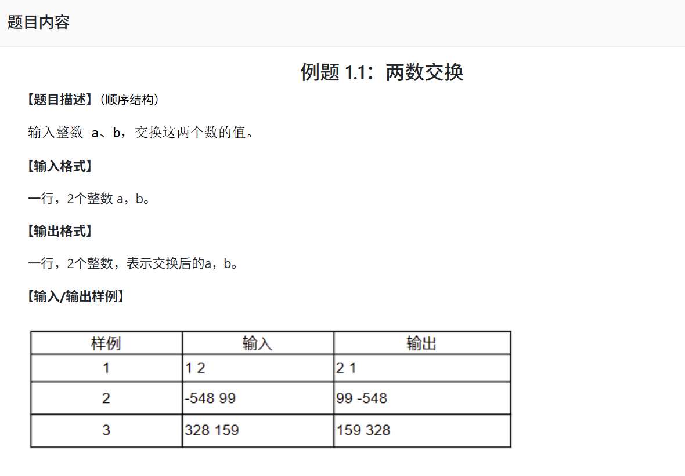
// 参考代码示例：两数交换
#include <stdio.h>
int main() {
int a, b, t;
scanf("%d%d", &a, &b);
t = a; a = b; b = t;
printf("%d %d", a, b);
return 0;
}解释：利用临时变量t，先把a的值存起来，再把b赋值给a，最后把t赋值给b，完成交换。
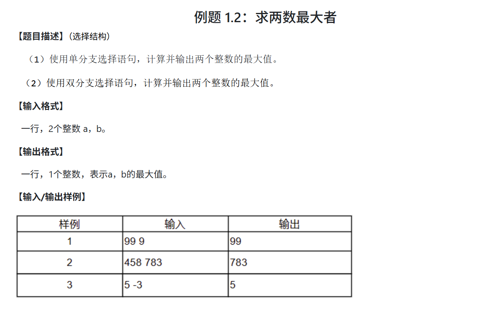
// 例题1.2：求两数最大者（单分支+双分支两种写法）
#include <stdio.h>
int main() {
int a, b, max;
scanf("%d%d", &a, &b);
// 写法1：单分支if语句
max = a;
if (b > max) {
max = b;
}
// 写法2：双分支if-else语句
/*
if (a > b) {
max = a;
} else {
max = b;
}
*/
printf("%d", max);
return 0;
}解释：单分支写法先假设a是最大值，再判断b是否更大；双分支写法直接比较a和b，把大的赋值给max。两种方法都能得到两数的最大值。
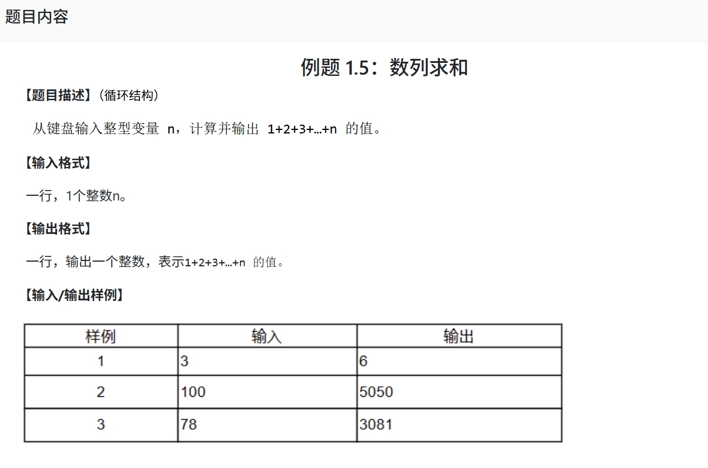
// 例题1.5：数列求和（循环结构）
#include <stdio.h>
int main() {
int n, i, sum = 0;
scanf("%d", &n);
for(i = 1; i <= n; i++) {
sum += i;
}
printf("%d", sum);
return 0;
}解释：用for循环从1加到n，每次把i的值累加到sum里，最后输出总和。也可以用公式n*(n+1)/2直接计算。
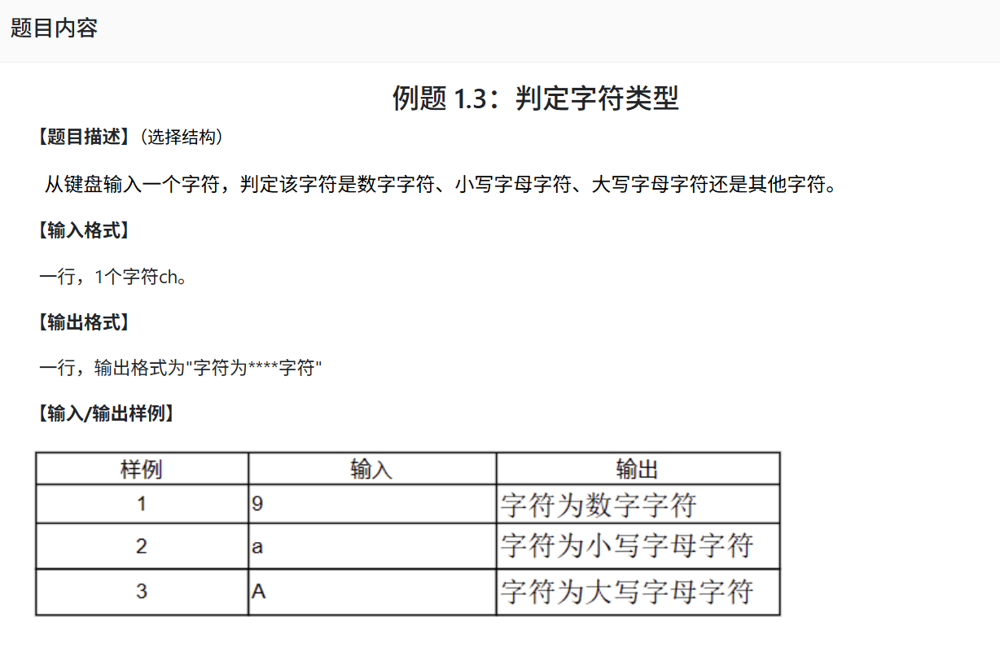
// 例题1.3：判定字符类型（选择结构）
#include <stdio.h>
int main() {
char ch;
scanf("%c", &ch);
if(ch >= '0' && ch <= '9') {
printf("字符为数字字符");
} else if(ch >= 'a' && ch <= 'z') {
printf("字符为小写字母字符");
} else if(ch >= 'A' && ch <= 'Z') {
printf("字符为大写字母字符");
} else {
printf("字符为其他字符");
}
return 0;
}解释：通过字符的ASCII码范围判断类型，数字字符范围'0'~'9'，小写字母'a'~'z'，大写字母'A'~'Z'，其余为其他字符。
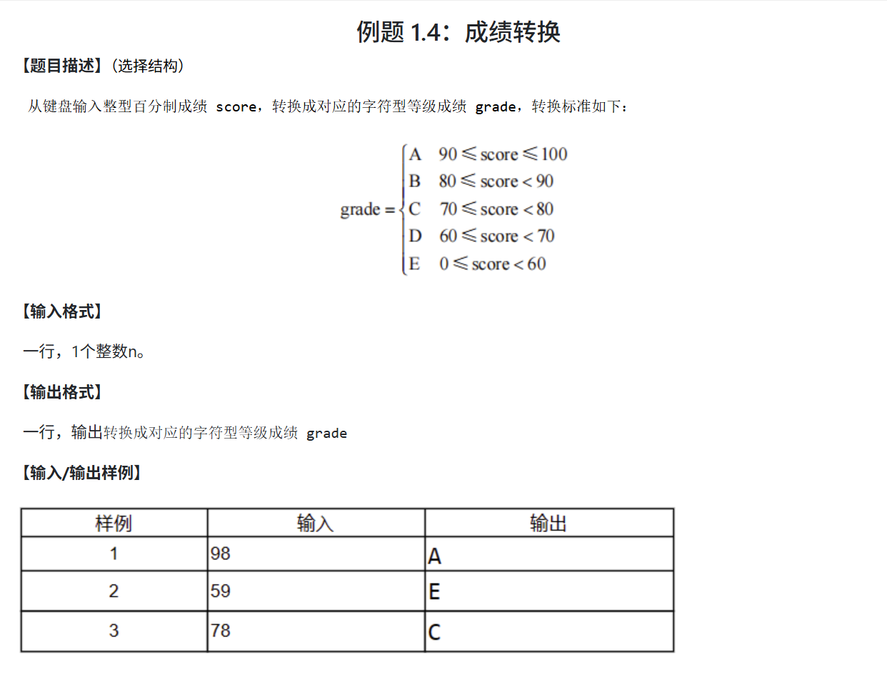
// 例题1.4：成绩转换（选择结构）
#include <stdio.h>
int main() {
int score;
char grade;
scanf("%d", &score);
if (score >= 90 && score <= 100) {
grade = 'A';
} else if (score >= 80 && score < 90) {
grade = 'B';
} else if (score >= 70 && score < 80) {
grade = 'C';
} else if (score >= 60 && score < 70) {
grade = 'D';
} else if (score >= 0 && score < 60) {
grade = 'E';
} else {
printf("无效成绩");
return 0;
}
printf("%c", grade);
return 0;
}解释：通过多分支if-else语句，根据输入的百分制分数范围，匹配对应的等级字符A-E并输出，同时对超出0-100的无效成绩做了简单判断。
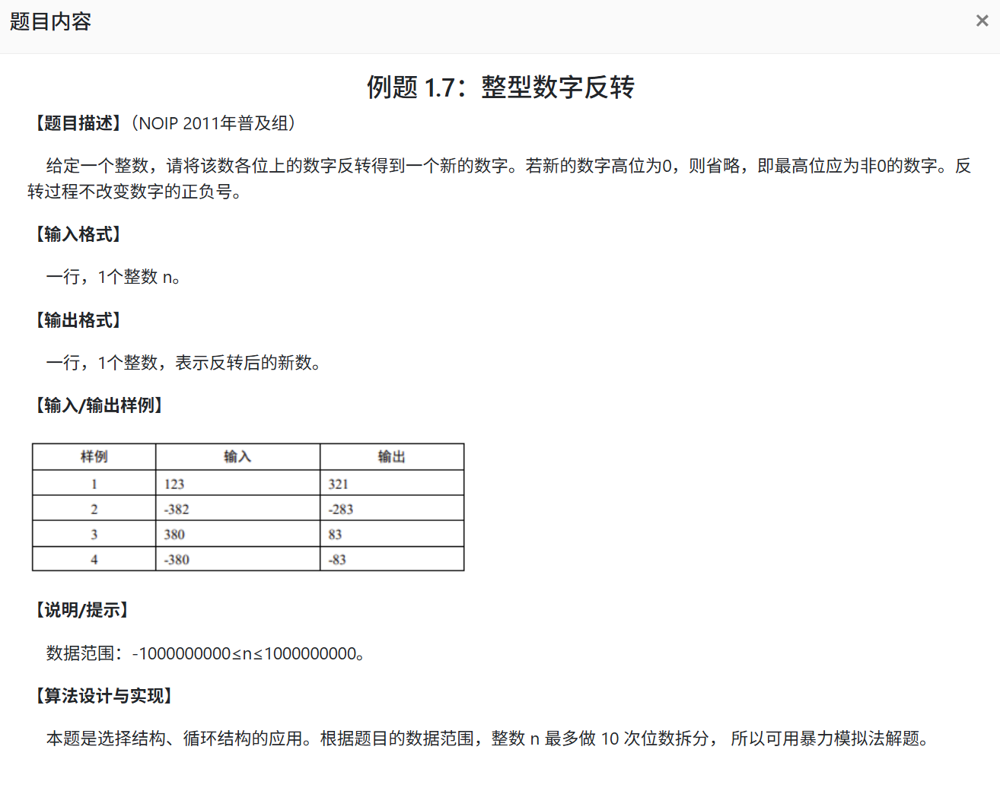
// 例题1.7：整型数字反转（NOIP2011普及组）
#include <stdio.h>
int main() {
long long n, res = 0;
int sign = 1;
scanf("%lld", &n);
if (n < 0) {
sign = -1;
n = -n;
}
while (n > 0) {
res = res * 10 + n % 10;
n /= 10;
}
res *= sign;
printf("%lld", res);
return 0;
}解释：先记录正负号，把负数转为正数处理；用循环每次取个位数字，拼接到新数上；最后还原正负号，自动去掉前导零。
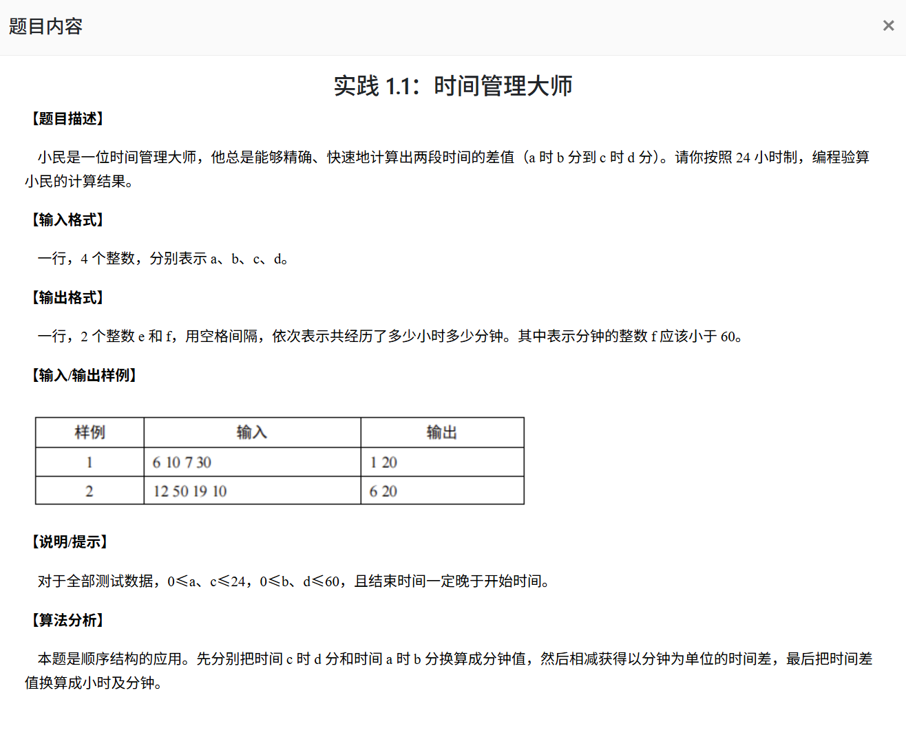
// 实践1.1：时间管理大师
#include <stdio.h>
int main() {
int a, b, c, d;
int start, end, diff;
scanf("%d%d%d%d", &a, &b, &c, &d);
// 换算成分钟
start = a * 60 + b;
end = c * 60 + d;
diff = end - start;
int e = diff / 60;
int f = diff % 60;
printf("%d %d", e, f);
return 0;
}解释：先把开始时间和结束时间都换算成分钟，相减得到总分钟差，再换算回小时和分钟，输出结果。
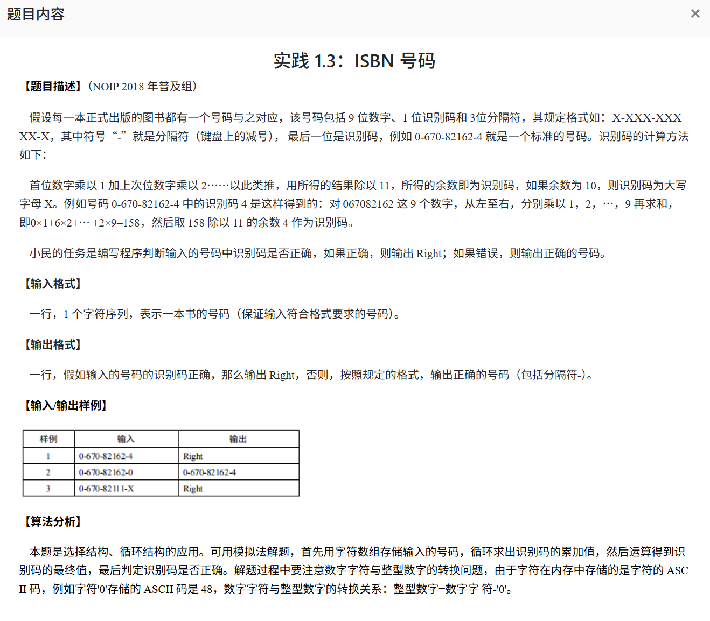
// 实践1.3：ISBN号码（NOIP2018普及组）
#include <stdio.h>
#include <string.h>
int main() {
char isbn[15];
scanf("%s", isbn);
int sum = 0, k = 1;
// 计算前9位数字的加权和
for(int i = 0; i < strlen(isbn) - 1; i++) {
if(isbn[i] != '-') {
sum += (isbn[i] - '0') * k++;
}
}
int mod = sum % 11;
char correct;
if(mod == 10) correct = 'X';
else correct = mod + '0';
// 判断识别码是否正确
if(isbn[strlen(isbn)-1] == correct) {
printf("Right");
} else {
isbn[strlen(isbn)-1] = correct;
printf("%s", isbn);
}
return 0;
}解释：先遍历ISBN字符串，跳过分隔符，计算前9位数字的加权和；再用和除以11求余，得到正确识别码；最后对比输入的识别码，输出Right或修正后的ISBN。
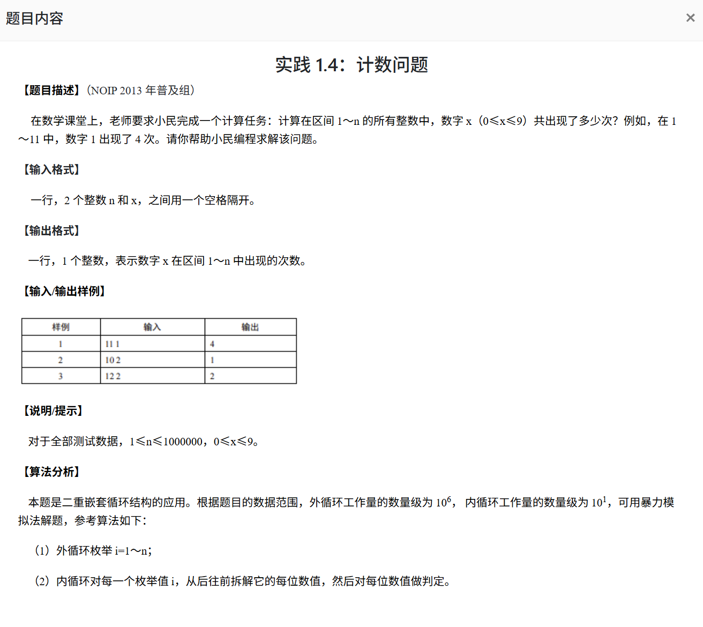
// 实践1.4：计数问题（NOIP2013普及组）
#include <stdio.h>
int main() {
int n, x, count = 0;
scanf("%d%d", &n, &x);
for (int i = 1; i <= n; i++) {
int temp = i;
while (temp > 0) {
if (temp % 10 == x) {
count++;
}
temp /= 10;
}
}
printf("%d", count);
return 0;
}解释：用外循环遍历1到n的每个数，内循环逐个拆分数字的每一位，判断是否等于x，累计出现次数，最后输出总数。
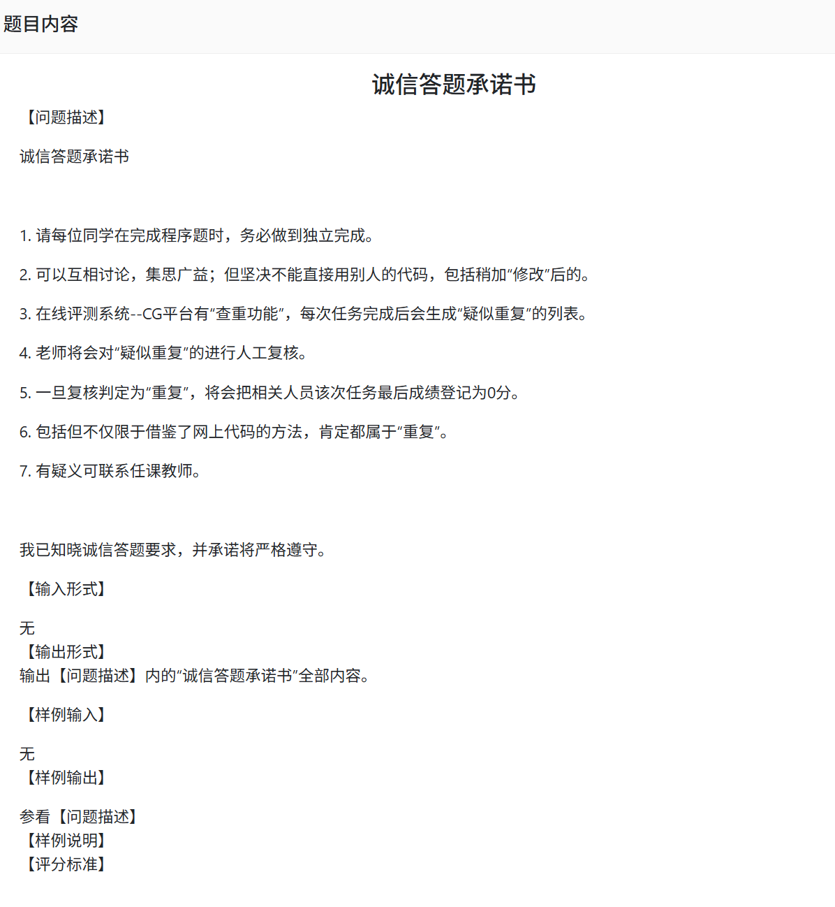
// 诚信答题承诺书
#include <stdio.h>
int main() {
printf("诚信答题承诺书\n");
printf("\n");
printf("【问题描述】\n");
printf("诚信答题承诺书\n");
printf("\n");
printf("1.请每位同学在完成程序题时，务必做到独立完成。\n");
printf("2.可以互相讨论，集思广益；但坚决不能直接用别人的代码，包括稍加“修改”后的。\n");
printf("3.在线评测系统--CG平台有“查重功能”，每次任务完成后会生成“疑似重复”的列表。\n");
printf("4.老师将会对“疑似重复”的进行人工复核。\n");
printf("5.一旦复核判定为“重复”，将会把相关人员该次任务最后成绩登记为0分。\n");
printf("6.包括但不仅限于借鉴了网上代码的方法，肯定都属于“重复”。\n");
printf("7.有疑义可联系任课教师。\n");
printf("\n");
printf("我已知晓诚信答题要求，并承诺将严格遵守。\n");
return 0;
}解释：本题只需要原样输出题目里的“诚信答题承诺书”全部内容，直接用printf逐行打印即可。
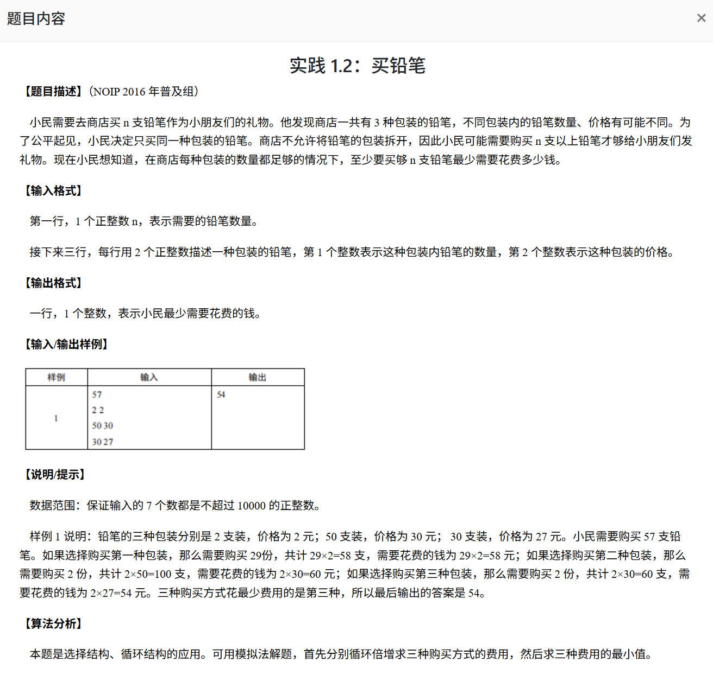
// 实践1.2：买铅笔（NOIP2016普及组）
#include <stdio.h>
int main() {
int n, min_cost = 1000000000;
int num[3], price[3];
scanf("%d", &n);
for(int i = 0; i < 3; i++) {
scanf("%d%d", &num[i], &price[i]);
}
for(int i = 0; i < 3; i++) {
int need = (n + num[i] - 1) / num[i]; // 向上取整
int cost = need * price[i];
if(cost < min_cost) {
min_cost = cost;
}
}
printf("%d", min_cost);
return 0;
}解释：分别计算三种包装的购买费用，用向上取整算出需要购买的包数，再乘以单价得到总费用，最后取三种费用的最小值。
感谢 谨华 同学指出本章错误，已修正！👍
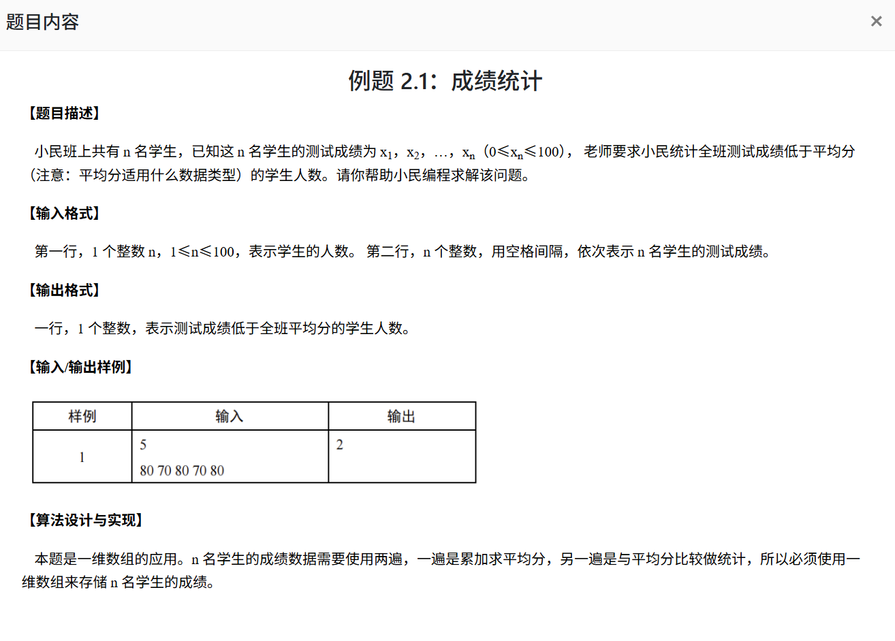
// 例题2.1：成绩统计（一维数组）
#include <stdio.h>
int main() {
int n, count = 0;
int score[100];
double avg = 0;
scanf("%d", &n);
for(int i = 0; i < n; i++) {
scanf("%d", &score[i]);
avg += score[i];
}
avg /= n;
for(int i = 0; i < n; i++) {
if(score[i] < avg) {
count++;
}
}
printf("%d", count);
return 0;
}解释：用一维数组存储所有成绩，先求和算出平均分，再遍历数组统计低于平均分的人数，最后输出结果。
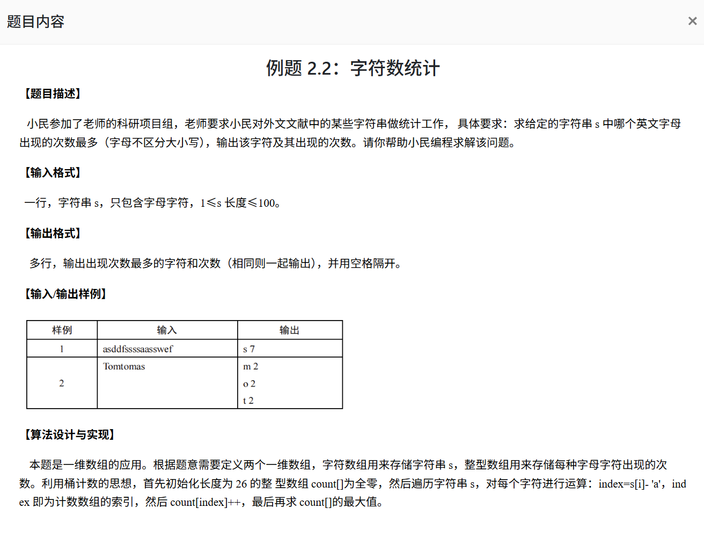
// 例题2.2：字符数统计（一维数组）
#include <stdio.h>
#include <string.h>
#include <ctype.h>
int main() {
char s[101];
int count[26] = {0};
int i, max = 0;
scanf("%s", s);
for(i = 0; i < strlen(s); i++) {
char c = tolower(s[i]);
count[c - 'a']++;
if(count[c - 'a'] > max) {
max = count[c - 'a'];
}
}
for(i = 0; i < 26; i++) {
if(count[i] == max) {
printf("%c %d\n", 'a' + i, max);
}
}
return 0;
}解释：用长度为26的数组统计每个字母的出现次数（不区分大小写），先遍历字符串计数并找到最大值，再输出所有次数等于最大值的字母和次数。
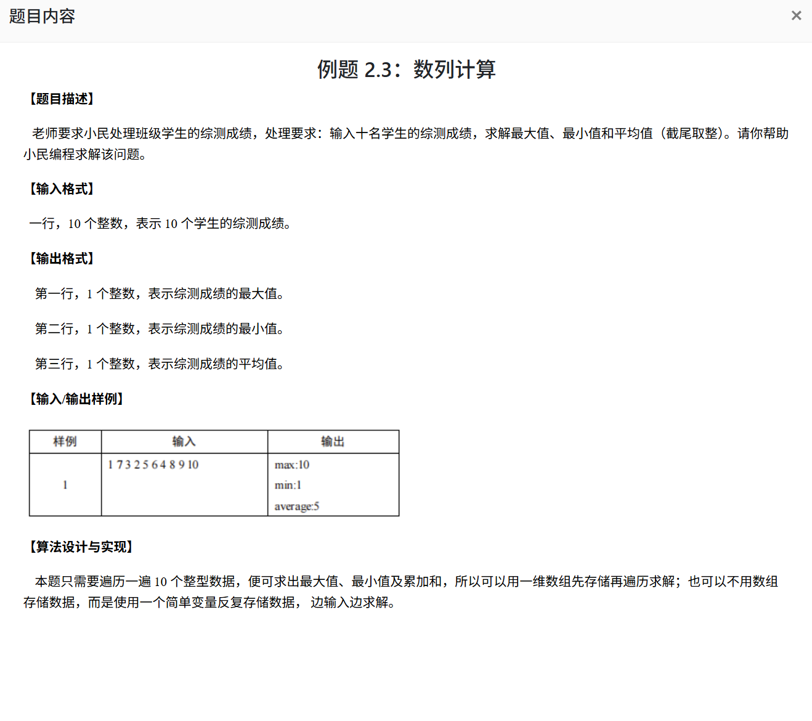
// 例题2.3：数列计算（一维数组）
#include <stdio.h>
int main() {
int score[10];
int max, min, sum = 0, average;
int i;
for(i = 0; i < 10; i++) {
scanf("%d", &score[i]);
sum += score[i];
if(i == 0) {
max = score[i];
min = score[i];
} else {
if(score[i] > max) max = score[i];
if(score[i] < min) min = score[i];
}
}
average = sum / 10; // 截尾取整
printf("max:%d\n", max);
printf("min:%d\n", min);
printf("average:%d\n", average);
return 0;
}解释：用一维数组存储10个成绩，一边输入一边求最大值、最小值和总和，最后用整数除法得到截尾取整的平均值，按格式输出结果。
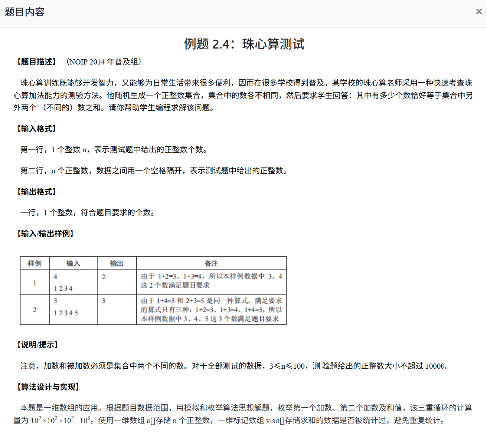
// 例题2.4：珠心算测试（NOIP2014普及组）
#include <stdio.h>
#include <stdbool.h>
int main() {
int n, i, j, k, count = 0;
int a[105];
bool visit[10005] = {false}; // 标记是否已统计过
scanf("%d", &n);
for(i = 0; i < n; i++) {
scanf("%d", &a[i]);
}
// 枚举两个不同的数相加
for(i = 0; i < n; i++) {
for(j = i + 1; j < n; j++) {
int sum = a[i] + a[j];
// 检查sum是否在数组中且未被统计过
for(k = 0; k < n; k++) {
if(a[k] == sum && !visit[k]) {
visit[k] = true;
count++;
}
}
}
}
printf("%d", count);
return 0;
}解释：用三重循环枚举两个不同的数相加，再检查和是否在数组中；用visit数组标记已统计过的数，避免重复计数，最后输出符合条件的总数。
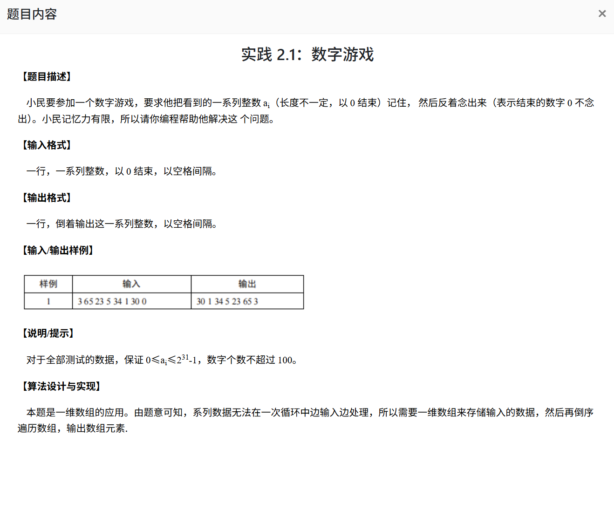
// 实践2.1：数字游戏（一维数组）
#include <stdio.h>
int main() {
int a[100];
int i = 0;
// 输入直到遇到0
scanf("%d", &a[i]);
while(a[i] != 0) {
i++;
scanf("%d", &a[i]);
}
// 逆序输出，不输出0
for(int j = i - 1; j >= 0; j--) {
if(j != i - 1) printf(" ");
printf("%d", a[j]);
}
return 0;
}解释：用一维数组存储输入的所有数字（以0结束），再从数组末尾逆序遍历并输出，不输出结束的0，数字间用空格隔开。
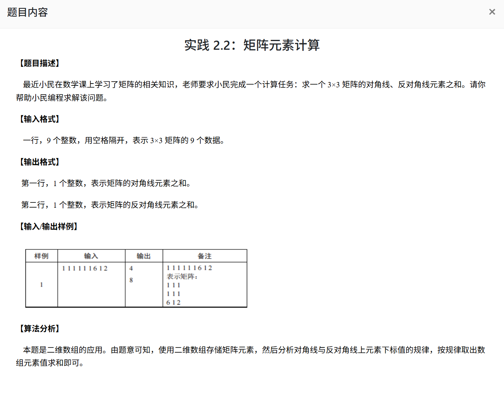
// 实践2.2：矩阵元素计算（二维数组）
#include <stdio.h>
int main() {
int a[3][3];
int sum1 = 0, sum2 = 0;
// 输入3x3矩阵
for(int i = 0; i < 3; i++) {
for(int j = 0; j < 3; j++) {
scanf("%d", &a[i][j]);
}
}
// 主对角线（i==j）
for(int i = 0; i < 3; i++) {
sum1 += a[i][i];
}
// 反对角线（i+j==2）
for(int i = 0; i < 3; i++) {
sum2 += a[i][2 - i];
}
printf("%d\n%d", sum1, sum2);
return 0;
}解释：用二维数组存储3×3矩阵，分别按主对角线（i==j）和反对角线（i+j=2）的下标规律取出元素求和，最后按格式输出结果。
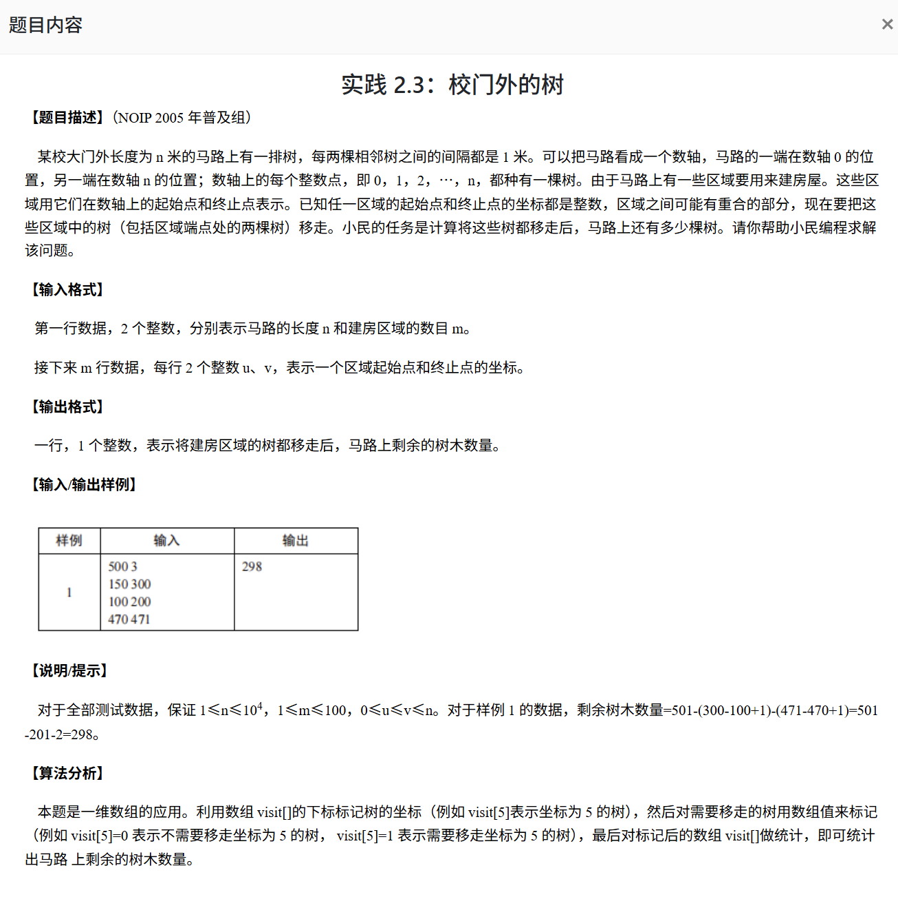
// 实践2.3：校门外的树
#include <stdio.h>
#include <string.h>
int main() {
int n, m;
scanf("%d%d", &n, &m);
int visit[10001]; // 标记树是否被移除
memset(visit, 0, sizeof(visit));
for(int i = 0; i < m; i++) {
int u, v;
scanf("%d%d", &u, &v);
for(int j = u; j <= v; j++) {
visit[j] = 1; // 标记该位置的树要被移除
}
}
int count = 0;
for(int i = 0; i <= n; i++) {
if(visit[i] == 0) {
count++;
}
}
printf("%d", count);
return 0;
}解释：用数组visit标记每个位置的树是否被移除，读入建房区间后，将区间内的树全部标记为移除，最后统计未被标记的树的数量，即为剩余树木数量。
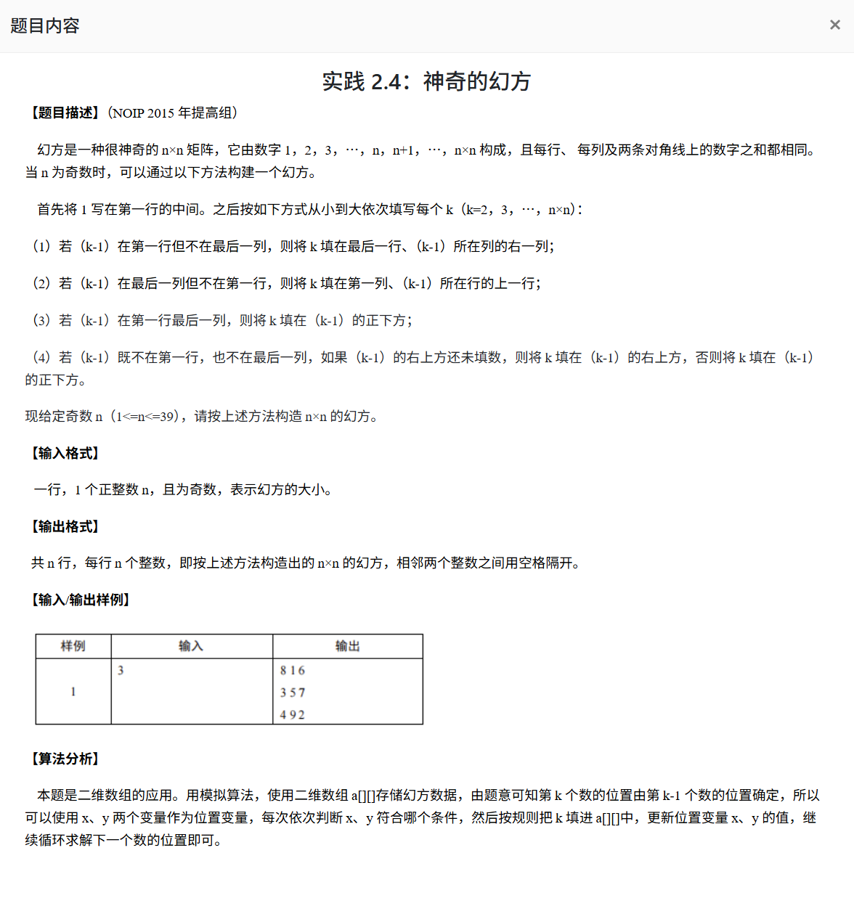
// 实践2.4：神奇的幻方（NOIP2015提高组）
#include <stdio.h>
int main() {
int n;
scanf("%d", &n);
int magic[40][40] = {0};
int x, y;
// 1放在第一行中间
x = 0;
y = n / 2;
magic[x][y] = 1;
for(int k = 2; k <= n * n; k++) {
int nx = x - 1;
int ny = y + 1;
if(nx < 0 && ny < n) {
// 情况1：上一行不在，放最后一行，右一列
nx = n - 1;
} else if(ny >= n && nx >= 0) {
// 情况2：右一列不在，放第一列，上一行
ny = 0;
} else if(nx < 0 && ny >= n) {
// 情况3：右上角，放正下方
nx = x + 1;
ny = y;
} else if(magic[nx][ny] != 0) {
// 情况4：右上方有数，放正下方
nx = x + 1;
ny = y;
}
magic[nx][ny] = k;
x = nx;
y = ny;
}
// 输出幻方
for(int i = 0; i < n; i++) {
for(int j = 0; j < n; j++) {
if(j > 0) printf(" ");
printf("%d", magic[i][j]);
}
printf("\n");
}
return 0;
}解释：用二维数组模拟幻方构造，先把1放在第一行中间，然后按题目给的4条规则依次放置后续数字；每次根据上一个数的位置计算下一个数的坐标，直到填满整个矩阵，最后按格式输出。
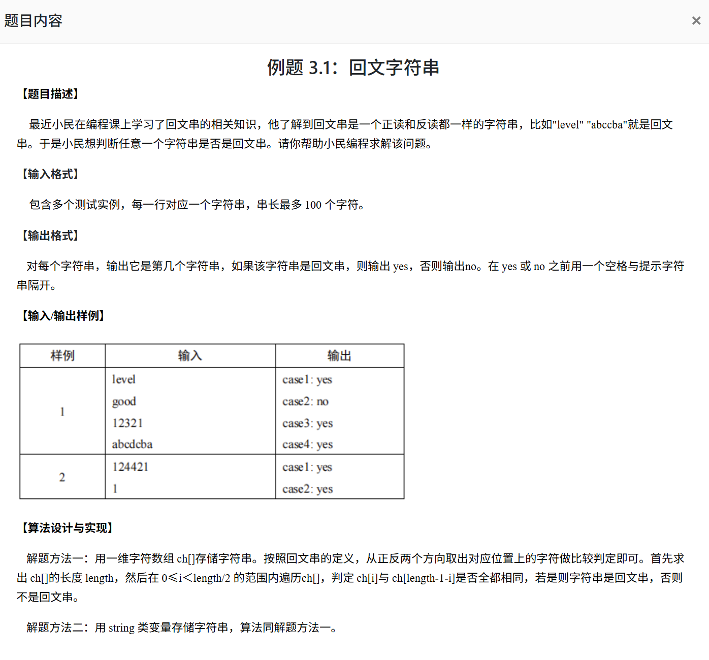
// 例题3.1：回文字符串
#include <stdio.h>
#include <string.h>
int main() {
char s[101];
int caseNum = 1;
while(scanf("%s", s) != EOF) {
int len = strlen(s);
int isPalindrome = 1;
for(int i = 0; i < len / 2; i++) {
if(s[i] != s[len - 1 - i]) {
isPalindrome = 0;
break;
}
}
printf("case%d: %s\n", caseNum++, isPalindrome ? "yes" : "no");
}
return 0;
}解释：循环读取每个字符串，通过比较首尾对称位置的字符判断是否为回文串，按题目格式输出case编号和yes/no。
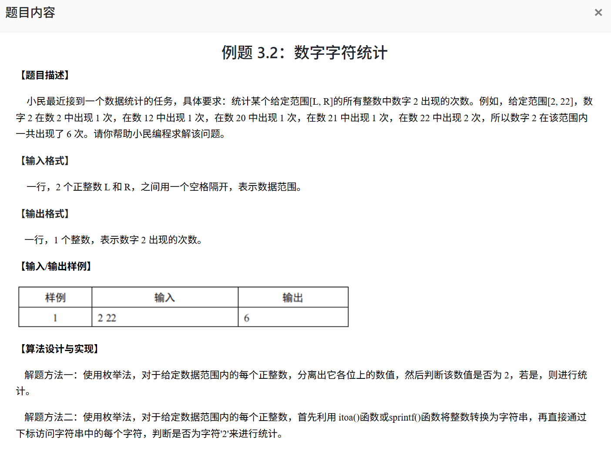
// 例题3.2：数字字符统计
#include <stdio.h>
int main() {
int L, R, count = 0;
scanf("%d%d", &L, &R);
for(int i = L; i <= R; i++) {
int temp = i;
while(temp > 0) {
if(temp % 10 == 2) {
count++;
}
temp /= 10;
}
}
printf("%d", count);
return 0;
}解释：枚举[L, R]范围内的每个整数，用循环拆分每一位数字，判断是否为2并累计次数，最后输出总数。
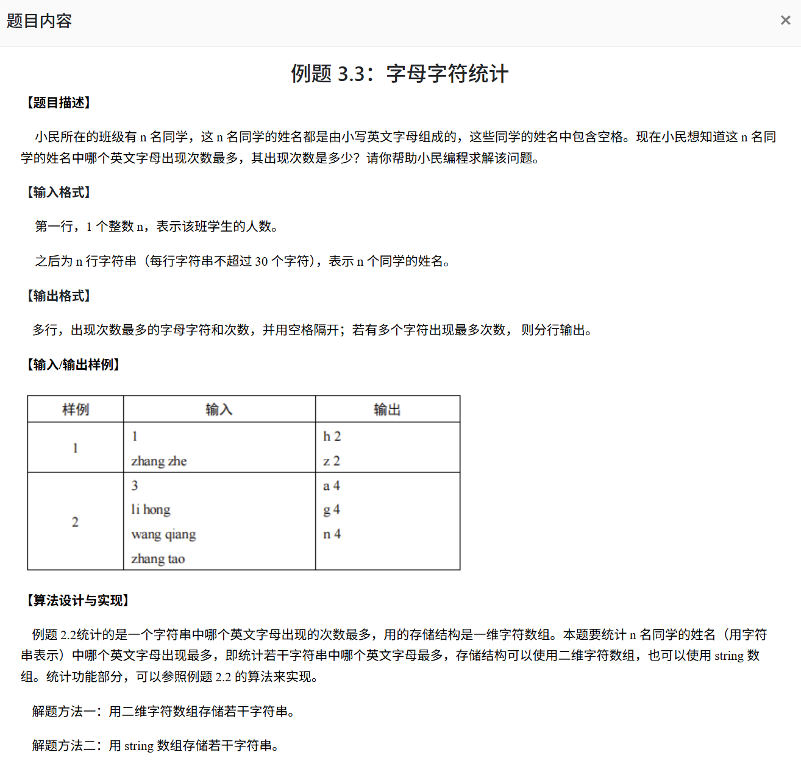
// 例题3.3：字母字符统计
#include <stdio.h>
#include <string.h>
int main() {
int n;
scanf("%d", &n);
getchar(); // 吸收换行符
int count[26] = {0};
char name[31];
for(int i = 0; i < n; i++) {
gets(name); // 读入带空格的姓名
for(int j = 0; name[j] != '\0'; j++) {
if(name[j] >= 'a' && name[j] <= 'z') {
count[name[j] - 'a']++;
}
}
}
// 找最大值
int max = 0;
for(int i = 0; i < 26; i++) {
if(count[i] > max) {
max = count[i];
}
}
// 输出所有出现次数为max的字母
for(int i = 0; i < 26; i++) {
if(count[i] == max) {
printf("%c %d\n", 'a' + i, max);
}
}
return 0;
}解释：先读入学生人数，再逐行读取姓名；用数组统计所有小写字母出现次数，找到最大值后，分行输出所有出现次数为最大值的字母和次数。
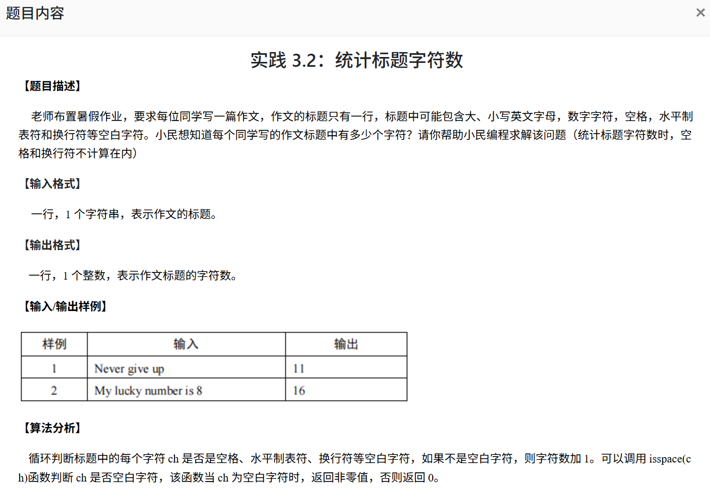
// 实践3.2：统计标题字符数
#include <stdio.h>
#include <ctype.h>
int main() {
char title[1001];
int count = 0;
gets(title); // 读取整行标题（含空格）
for(int i = 0; title[i] != '\0'; i++) {
if(!isspace(title[i])) { // 非空白字符计数
count++;
}
}
printf("%d", count);
return 0;
}解释：读取整行标题，遍历每个字符，用isspace函数判断是否为空白字符（空格、制表符、换行符），非空白字符计数，最后输出总数。
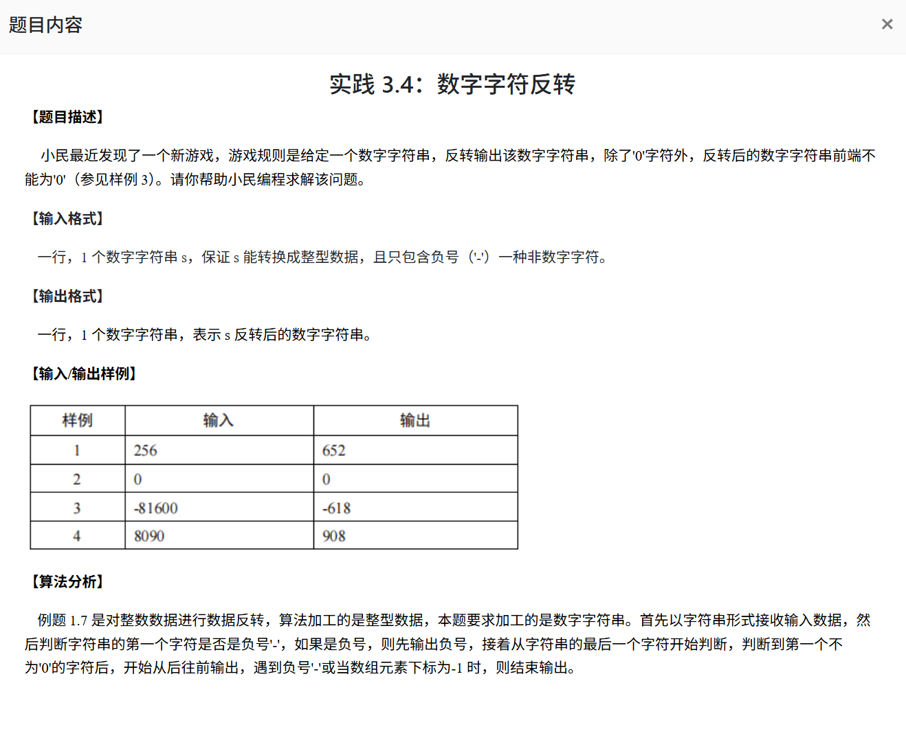
// 实践3.4：数字字符反转
#include <stdio.h>
#include <string.h>
int main() {
char s[100];
scanf("%s", s);
int len = strlen(s);
int start = 0;
// 处理负号
if(s[0] == '-') {
printf("-");
start = 1;
}
// 找到末尾第一个非0字符
int end = len - 1;
while(end >= start && s[end] == '0') {
end--;
}
// 全0的情况
if(end < start) {
printf("0");
} else {
// 从end倒序输出
for(int i = end; i >= start; i--) {
printf("%c", s[i]);
}
}
return 0;
}解释：先判断是否为负数，处理负号；再从字符串末尾找到第一个非0字符，从该位置倒序输出数字；若全为0则直接输出0，避免反转后出现前导0。
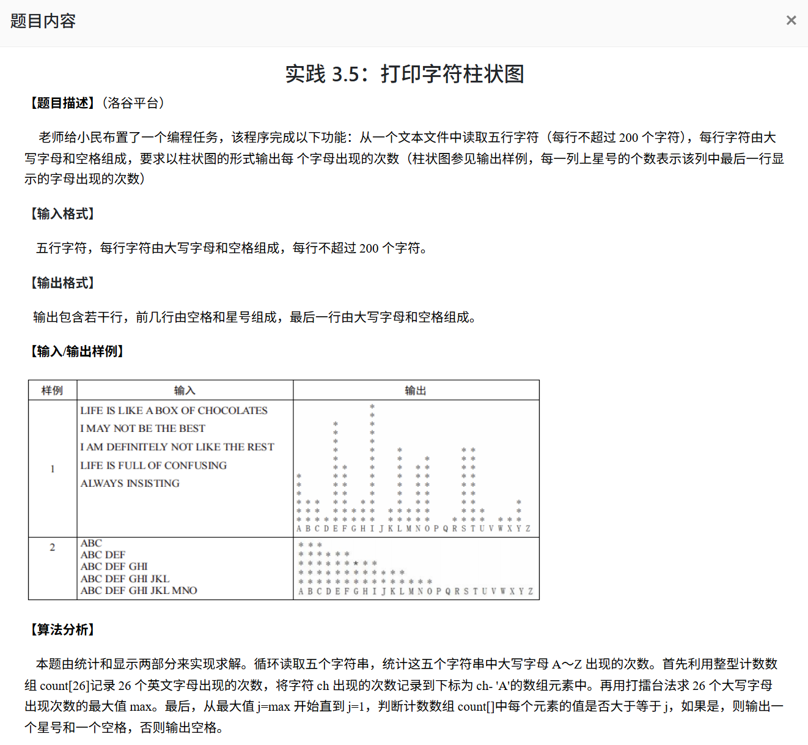
// 实践3.5：打印字符柱状图
#include <stdio.h>
int main() {
int count[26] = {0};
char line[201];
// 读入5行字符
for(int i = 0; i < 5; i++) {
gets(line);
for(int j = 0; line[j] != '\0'; j++) {
if(line[j] >= 'A' && line[j] <= 'Z') {
count[line[j] - 'A']++;
}
}
}
// 找出现次数最大值
int max = 0;
for(int i = 0; i < 26; i++) {
if(count[i] > max) {
max = count[i];
}
}
// 从高到低打印柱状图
for(int i = max; i > 0; i--) {
for(int j = 0; j < 26; j++) {
if(count[j] >= i) {
printf("* ");
} else {
printf(" ");
}
}
printf("\n");
}
// 打印底部字母
for(int i = 0; i < 26; i++) {
printf("%c ", 'A' + i);
}
return 0;
}解释：先统计5行文本中每个大写字母出现的次数，再从最高次数开始，逐行打印星号（次数≥当前高度）和空格，最后打印一行字母作为横轴。
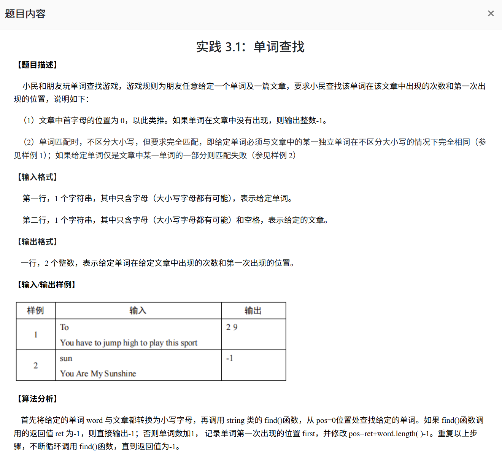
// 实践3.1：单词查找
#include <stdio.h>
#include <string.h>
#include <ctype.h>
// 将字符串转为小写
void toLowerStr(char *s) {
for(int i = 0; s[i]; i++) {
s[i] = tolower(s[i]);
}
}
int main() {
char word[100], article[1000];
scanf("%s", word);
getchar(); // 吸收换行
gets(article);
char lowerWord[100], lowerArticle[1000];
strcpy(lowerWord, word);
strcpy(lowerArticle, article);
toLowerStr(lowerWord);
toLowerStr(lowerArticle);
int lenWord = strlen(lowerWord);
int count = 0, firstPos = -1;
char *p = lowerArticle;
while((p = strstr(p, lowerWord)) != NULL) {
// 检查是不是独立单词
int isWord = 1;
int pos = p - lowerArticle;
// 前一个字符必须是空格或开头
if(pos > 0 && lowerArticle[pos-1] != ' ') {
isWord = 0;
}
// 后一个字符必须是空格或结尾
if(lowerArticle[pos + lenWord] != '\0' && lowerArticle[pos + lenWord] != ' ') {
isWord = 0;
}
if(isWord) {
if(count == 0) {
firstPos = pos;
}
count++;
}
p++;
}
if(count == 0) {
printf("-1");
} else {
printf("%d %d", count, firstPos);
}
return 0;
}解释：先把单词和文章都转为小写，用strstr查找匹配位置，再检查前后字符确保是独立单词；记录次数和第一次出现的位置，无匹配则输出-1。
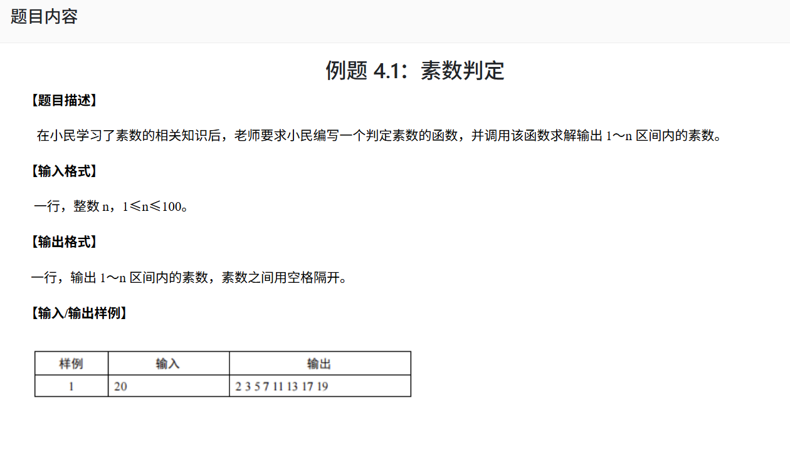
// 例题4.1：素数判定
#include <stdio.h>
#include <stdbool.h>
// 判断素数的函数
bool isPrime(int x) {
if(x <= 1) return false;
for(int i = 2; i * i <= x; i++) {
if(x % i == 0) return false;
}
return true;
}
int main() {
int n;
scanf("%d", &n);
bool first = true;
for(int i = 2; i <= n; i++) {
if(isPrime(i)) {
if(!first) printf(" ");
printf("%d", i);
first = false;
}
}
return 0;
}解释：定义一个判断素数的函数isPrime，遍历1~n区间，调用该函数筛选出素数并按格式输出，素数之间用空格隔开。
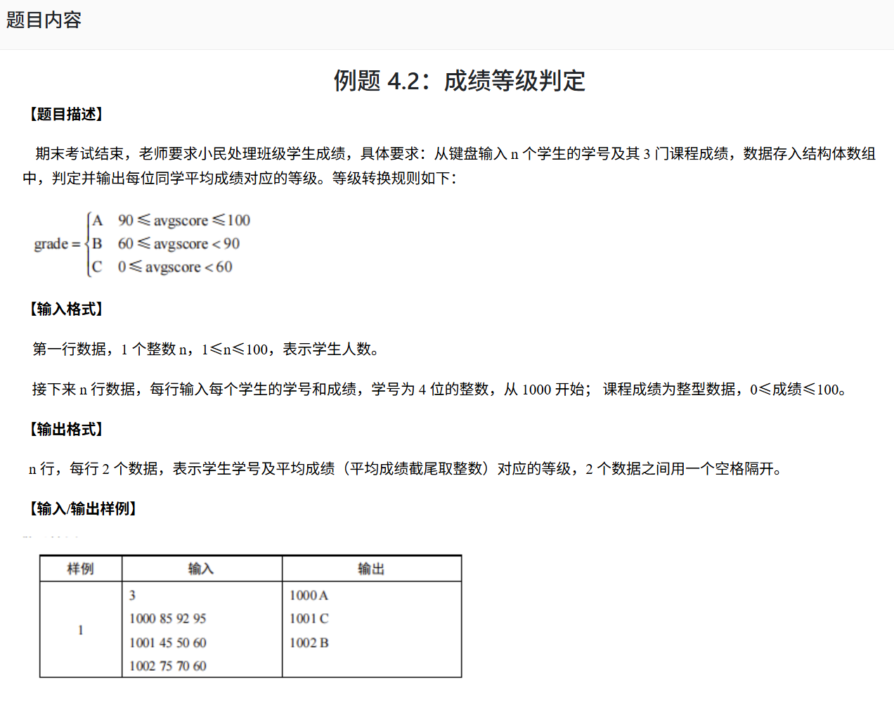
// 例题4.2：成绩等级判定（结构体）
#include <stdio.h>
struct Student {
int id;
int score[3];
};
int main() {
int n;
scanf("%d", &n);
struct Student stu[100];
for(int i = 0; i < n; i++) {
scanf("%d %d %d %d", &stu[i].id, &stu[i].score[0], &stu[i].score[1], &stu[i].score[2]);
}
for(int i = 0; i < n; i++) {
int avg = (stu[i].score[0] + stu[i].score[1] + stu[i].score[2]) / 3;
char grade;
if(avg >= 90) grade = 'A';
else if(avg >= 60) grade = 'B';
else grade = 'C';
printf("%d %c\n", stu[i].id, grade);
}
return 0;
}解释：定义学生结构体存储学号和三门课程成绩，读取数据后计算平均分（截尾取整），根据平均分判定等级（A/B/C），最后按格式输出学号和等级。
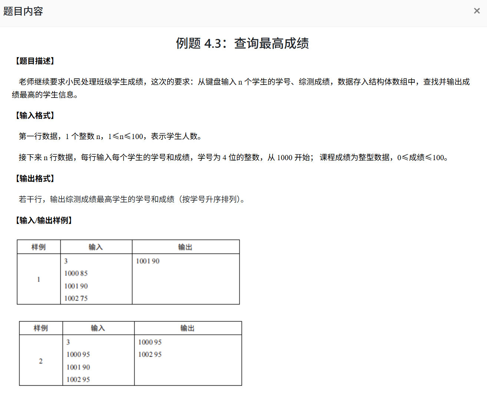
// 例题4.3：查询最高成绩（结构体）
#include <stdio.h>
struct Student {
int id;
int score;
};
int main() {
int n;
scanf("%d", &n);
struct Student stu[100];
int maxScore = -1;
// 读入数据并找出最高分
for(int i = 0; i < n; i++) {
scanf("%d %d", &stu[i].id, &stu[i].score);
if(stu[i].score > maxScore) {
maxScore = stu[i].score;
}
}
// 按学号升序输出所有最高分学生
for(int i = 0; i < n; i++) {
if(stu[i].score == maxScore) {
printf("%d %d\n", stu[i].id, stu[i].score);
}
}
return 0;
}解释：用结构体数组存储学号和成绩，遍历数据找到最高分，再按学号顺序输出所有成绩等于最高分的学生信息。
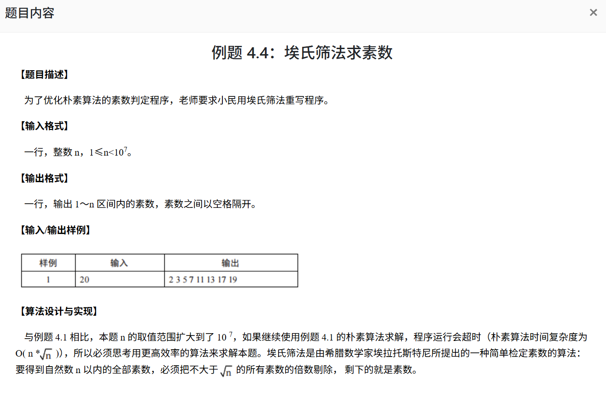
// 例题4.4：埃氏筛法求素数
#include <stdio.h>
#include <stdlib.h>
#include <stdbool.h>
int main() {
int n;
scanf("%d", &n);
bool *isPrime = (bool*)malloc((n + 1) * sizeof(bool));
for(int i = 0; i <= n; i++) {
isPrime[i] = true;
}
isPrime[0] = isPrime[1] = false;
for(int i = 2; i * i <= n; i++) {
if(isPrime[i]) {
for(int j = i * i; j <= n; j += i) {
isPrime[j] = false;
}
}
}
bool first = true;
for(int i = 2; i <= n; i++) {
if(isPrime[i]) {
if(!first) printf(" ");
printf("%d", i);
first = false;
}
}
free(isPrime);
return 0;
}解释：使用埃氏筛法，先标记所有数为素数，再依次剔除每个素数的倍数，最后输出1~n区间内所有未被标记的素数。该算法时间复杂度更低，适合处理较大的n值。
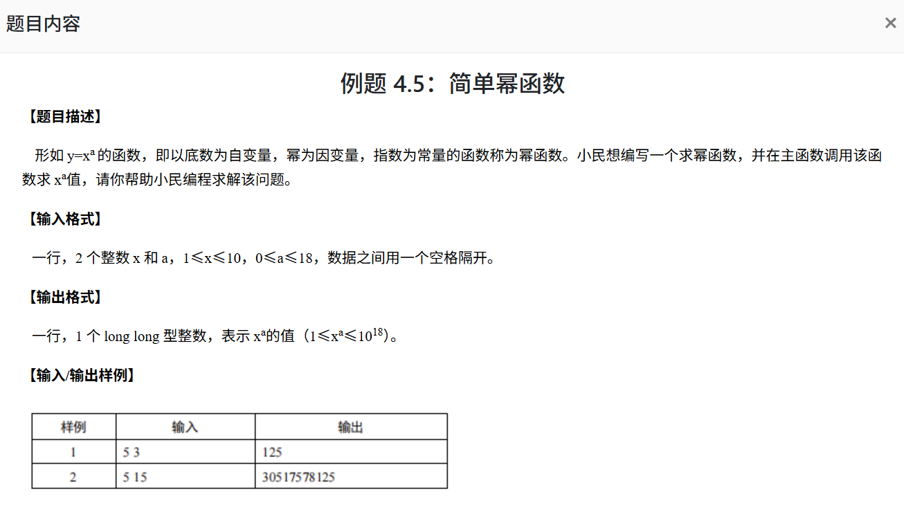
// 例题4.5：简单幂函数
#include <stdio.h>
long long power(int x, int a) {
long long result = 1;
for(int i = 0; i < a; i++) {
result *= x;
}
return result;
}
int main() {
int x, a;
scanf("%d %d", &x, &a);
printf("%lld", power(x, a));
return 0;
}解释：定义一个幂函数，用循环累乘的方式计算x的a次方，返回long long类型的结果；主函数中调用该函数并输出结果。
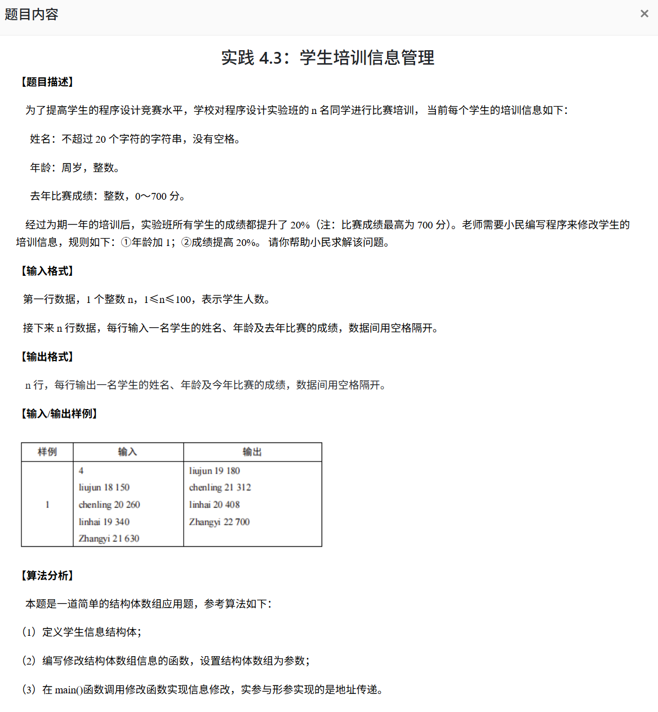
// 实践4.3：学生培训信息管理（结构体数组）
#include <stdio.h>
#include <string.h>
struct Student {
char name[21];
int age;
int score;
};
// 修改学生信息的函数
void updateInfo(struct Student stu[], int n) {
for(int i = 0; i < n; i++) {
stu[i].age += 1; // 年龄+1
stu[i].score = (int)(stu[i].score * 1.2); // 成绩提升20%
if(stu[i].score > 700) { // 成绩不超过700
stu[i].score = 700;
}
}
}
int main() {
int n;
scanf("%d", &n);
struct Student stu[100];
// 读入学生信息
for(int i = 0; i < n; i++) {
scanf("%s %d %d", stu[i].name, &stu[i].age, &stu[i].score);
}
// 更新信息
updateInfo(stu, n);
// 输出更新后的信息
for(int i = 0; i < n; i++) {
printf("%s %d %d\n", stu[i].name, stu[i].age, stu[i].score);
}
return 0;
}解释：定义学生结构体存储姓名、年龄和成绩；编写函数通过地址传递修改结构体数组，实现年龄+1、成绩提升20%（上限700分），主函数中调用函数并输出更新后的信息。
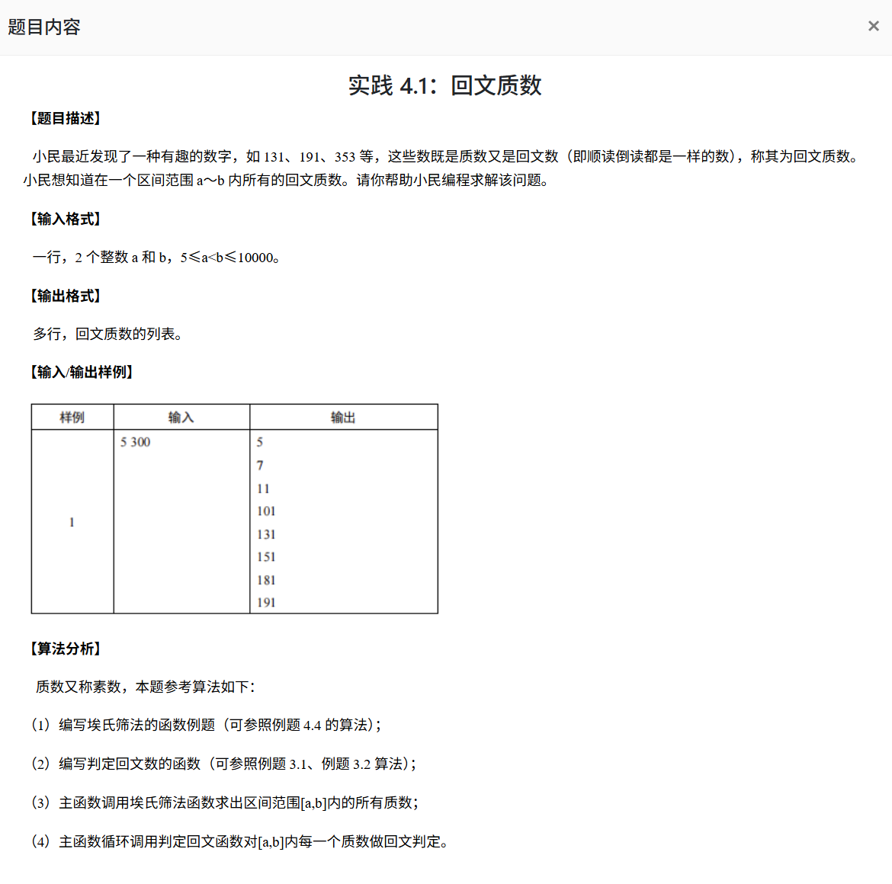
// 实践4.1：回文质数
#include <stdio.h>
#include <stdbool.h>
#include <stdlib.h>
// 埃氏筛法求素数
bool* sieve(int max) {
bool *isPrime = (bool*)malloc((max + 1) * sizeof(bool));
for(int i = 0; i <= max; i++) isPrime[i] = true;
isPrime[0] = isPrime[1] = false;
for(int i = 2; i * i <= max; i++) {
if(isPrime[i]) {
for(int j = i * i; j <= max; j += i) {
isPrime[j] = false;
}
}
}
return isPrime;
}
// 判断回文数
bool isPalindrome(int x) {
int tmp = x, rev = 0;
while(tmp > 0) {
rev = rev * 10 + tmp % 10;
tmp /= 10;
}
return rev == x;
}
int main() {
int a, b;
scanf("%d %d", &a, &b);
bool *isPrime = sieve(b);
for(int i = a; i <= b; i++) {
if(isPrime[i] && isPalindrome(i)) {
printf("%d\n", i);
}
}
free(isPrime);
return 0;
}解释：先用埃氏筛法找出区间内所有素数，再对每个素数判断是否为回文数，同时满足两个条件的数即为回文质数，按行输出。
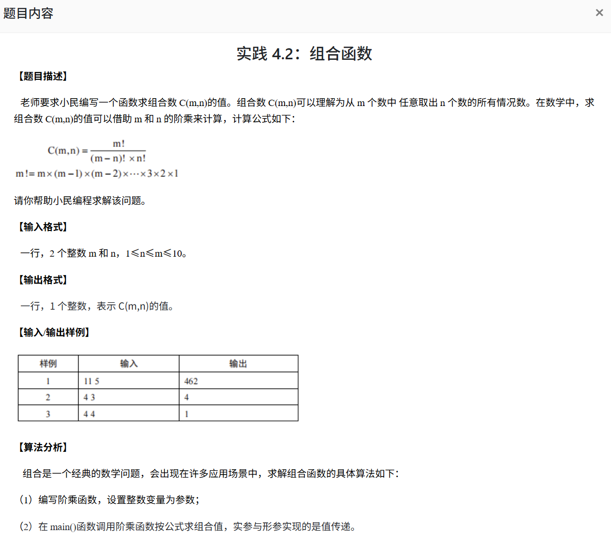
// 实践4.2：组合函数
#include <stdio.h>
// 阶乘函数
long long factorial(int x) {
long long res = 1;
for(int i = 1; i <= x; i++) {
res *= i;
}
return res;
}
int main() {
int m, n;
scanf("%d %d", &m, &n);
long long c = factorial(m) / (factorial(m - n) * factorial(n));
printf("%lld", c);
return 0;
}解释：编写阶乘函数factorial，根据组合数公式C(m,n) = m!/((m-n)!×n!)，调用阶乘函数计算并输出结果。
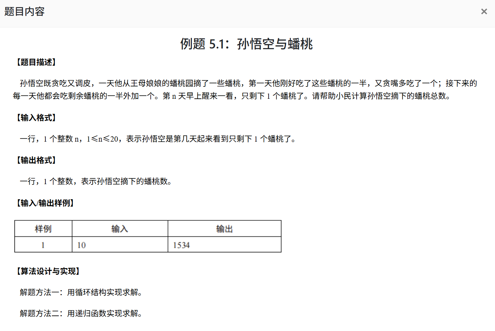
// 例题5.1：孙悟空与蟠桃
#include <stdio.h>
int main() {
int n;
scanf("%d", &n);
int peach = 1; // 第n天剩下1个
// 从第n天倒推回第1天
for(int i = 1; i < n; i++) {
peach = (peach + 1) * 2;
}
printf("%d", peach);
return 0;
}解释：采用倒推法，已知第n天剩1个，每天的前一天数量为(当天数量+1)×2，循环n-1次即可得到最初的蟠桃总数。
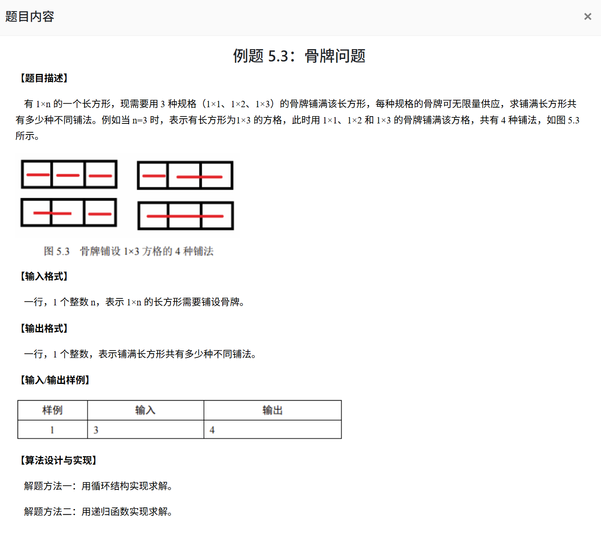
// 例题5.3：骨牌问题（递推）
#include <stdio.h>
int main() {
int n;
scanf("%d", &n);
int dp[100] = {0};
dp[0] = 1; // 边界条件：长度为0时，1种铺法（什么都不铺）
dp[1] = 1; // 长度为1，只能用1×1
dp[2] = 2; // 长度为2，两种铺法：两个1×1 或 一个1×2
for(int i = 3; i <= n; i++) {
// 递推公式：最后一块放1×1/1×2/1×3的情况之和
dp[i] = dp[i-1] + dp[i-2] + dp[i-3];
}
printf("%d", dp[n]);
return 0;
}解释：采用动态规划递推，定义dp[i]为铺满1×i的方案数。递推关系为dp[i] = dp[i-1] + dp[i-2] + dp[i-3]，分别对应最后放1×1、1×2、1×3骨牌的情况，边界条件为dp[0]=1, dp[1]=1, dp[2]=2。
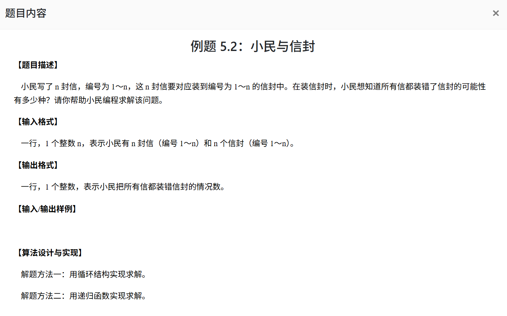
// 例题5.2：小民与信封（错排问题）
#include <stdio.h>
int main() {
int n;
scanf("%d", &n);
long long dp[20];
dp[1] = 0; // 1封信无法错排
dp[2] = 1; // 2封信交换位置，1种方法
for(int i = 3; i <= n; i++) {
// 错排递推公式：dp[i] = (i-1) * (dp[i-1] + dp[i-2])
dp[i] = (i - 1) * (dp[i-1] + dp[i-2]);
}
printf("%lld", dp[n]);
return 0;
}解释：这是经典的错排问题，用递推公式dp[i] = (i-1)*(dp[i-1]+dp[i-2])求解。边界条件为dp[1]=0、dp[2]=1，按公式循环计算即可得到n封信的错排方案数。
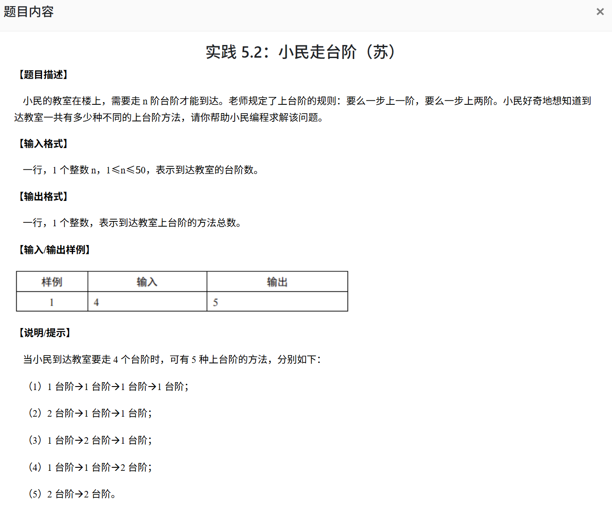
// 实践5.2：小民走台阶（斐波那契数列）
#include <stdio.h>
int main() {
int n;
scanf("%d", &n);
long long dp[60];
dp[1] = 1; // 1阶：只有1种走法
dp[2] = 2; // 2阶：1+1 或 2
for(int i = 3; i <= n; i++) {
// 递推公式：最后一步走1阶/2阶的方案和
dp[i] = dp[i-1] + dp[i-2];
}
printf("%lld", dp[n]);
return 0;
}解释：经典的走台阶问题，本质是斐波那契数列。递推公式为dp[i] = dp[i-1] + dp[i-2]，分别对应最后一步走1阶和走2阶的情况，边界条件为dp[1]=1、dp[2]=2。
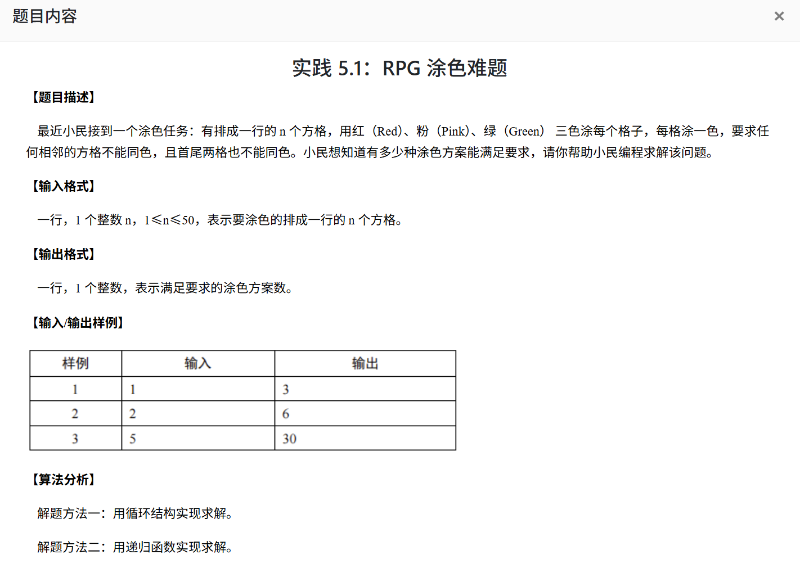
// 实践5.1：RPG涂色难题（递推）
#include <stdio.h>
int main() {
int n;
scanf("%d", &n);
long long dp[60];
dp[1] = 3; // 只有1个格子，3种颜色任选
dp[2] = 6; // 2个格子，相邻不同色：3×2=6种
// 递推公式：dp[i] = dp[i-1] + dp[i-2]
for(int i = 3; i <= n; i++) {
dp[i] = dp[i-1] + dp[i-2];
}
printf("%lld", dp[n]);
return 0;
}解释：这是经典的环形涂色问题。递推公式为dp[i] = dp[i-1] + dp[i-2]，边界条件为dp[1]=3、dp[2]=6。循环计算即可得到满足“相邻不同色、首尾不同色”的涂色方案数。
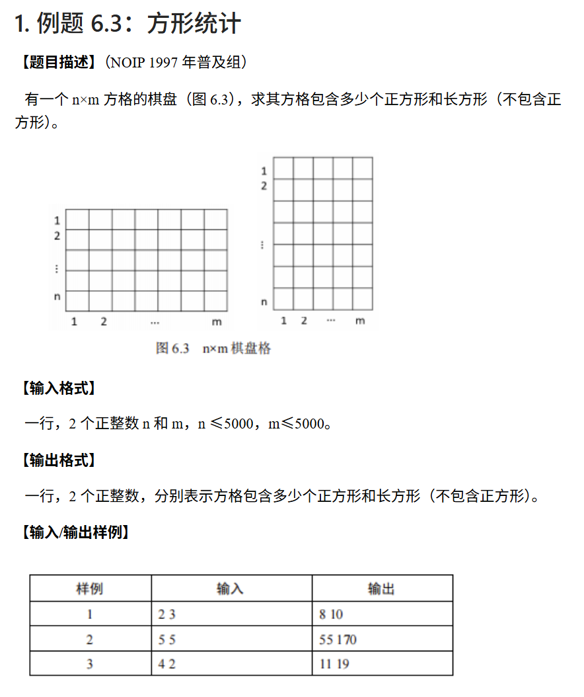
// 例题6.1 求特殊方程的正整数解
#include <stdio.h>
int main() {
int n, flag = 0;
scanf("%d", &n);
for (int x = 1; x <= n; x++) {
for (int y = 1; y <= n; y++) {
if (x * x + y * y == n) {
printf("%d %d\n", x, y);
flag = 1;
}
}
}
if (!flag) printf("No Solution");
return 0;
}解释：使用双重循环枚举x和y，判断是否满足x²+y²=n。满足则输出，循环结束无满足解则输出No Solution。
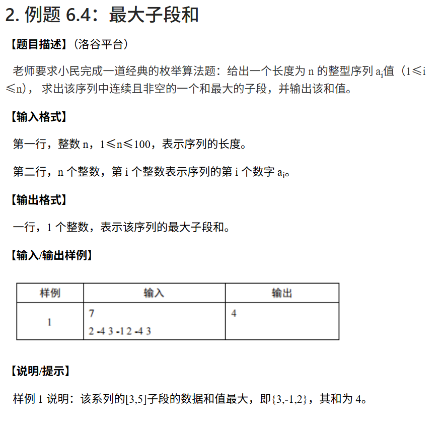
// 例题6.4：最大子段和（枚举法）
#include <stdio.h>
int main() {
int n;
scanf("%d", &n);
int a[100];
for(int i = 0; i < n; i++) {
scanf("%d", &a[i]);
}
int maxSum = a[0]; // 初始化为第一个元素
for(int i = 0; i < n; i++) {
int sum = 0;
for(int j = i; j < n; j++) {
sum += a[j];
if(sum > maxSum) {
maxSum = sum;
}
}
}
printf("%d", maxSum);
return 0;
}解释：采用双重循环枚举所有子段的起点和终点，累加计算每个子段的和，记录最大值。适用于n≤100的小规模数据。
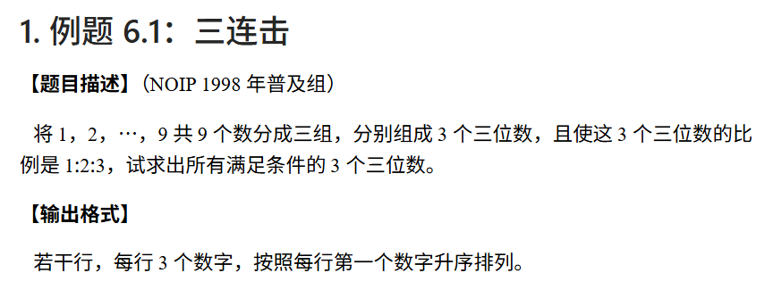
// 例题6.1：三连击
#include <stdio.h>
// 判断三个数是否使用了1-9且不重复
int check(int a, int b, int c) {
int used[10] = {0};
// 分解数字并标记
used[a/100]++; used[(a/10)%10]++; used[a%10]++;
used[b/100]++; used[(b/10)%10]++; used[b%10]++;
used[c/100]++; used[(c/10)%10]++; used[c%10]++;
// 检查1-9是否都出现一次
for(int i = 1; i <= 9; i++) {
if(used[i] != 1) return 0;
}
return 1;
}
int main() {
for(int a = 123; a <= 329; a++) { // a最大为329，因为329*3=987
int b = a * 2;
int c = a * 3;
if(check(a, b, c)) {
printf("%d %d %d\n", a, b, c);
}
}
return 0;
}解释：枚举第一个三位数a（范围123~329），根据比例关系计算b和c，再检查三个数是否包含1-9所有数字且不重复，满足条件则输出。
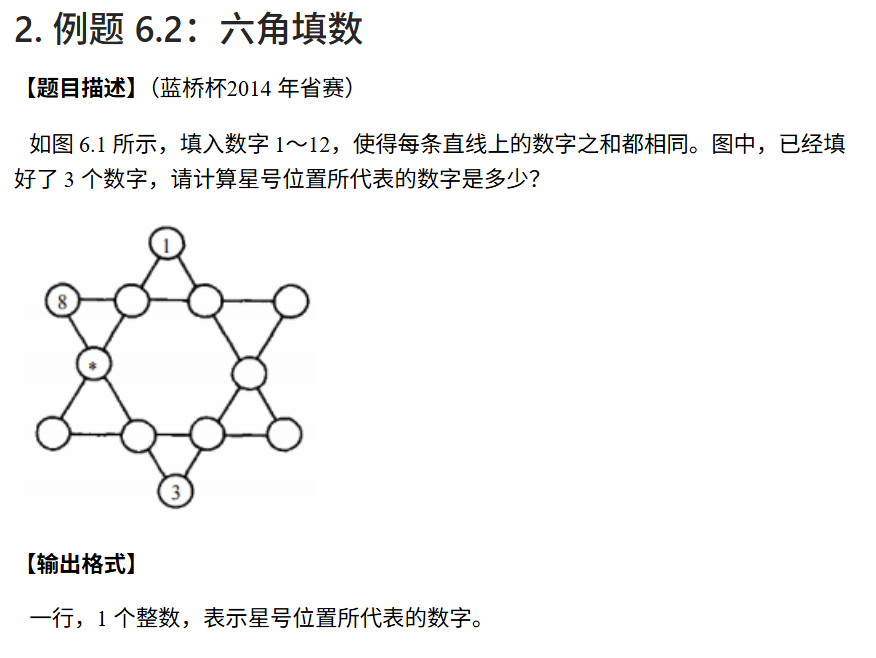
// 例题6.2：六角填数
#include <stdio.h>
#include <stdbool.h>
// 检查所有直线和是否相等
bool check(int p[]) {
int s[6];
// 6条直线的和
s[0] = 1 + p[0] + p[1];
s[1] = 1 + p[2] + p[3] + 3;
s[2] = 8 + p[0] + p[4] + p[5];
s[3] = 8 + p[2] + p[6];
s[4] = 3 + p[7] + p[8];
s[5] = p[1] + p[4] + p[7] + p[9];
for(int i = 1; i < 6; i++) {
if(s[i] != s[0]) return false;
}
return true;
}
// 生成排列并枚举
void dfs(int p[], bool used[], int idx, int *ans) {
if(idx == 10) {
if(check(p)) {
*ans = p[6]; // 星号位置是p[6]
}
return;
}
for(int i = 2; i <= 12; i++) {
if(i == 3 || i == 8) continue;
if(!used[i]) {
used[i] = true;
p[idx] = i;
dfs(p, used, idx+1, ans);
if(*ans != 0) return; // 找到答案直接返回
used[i] = false;
}
}
}
int main() {
int p[10] = {0};
bool used[13] = {false};
used[1] = used[3] = used[8] = true;
int ans = 0;
dfs(p, used, 0, &ans);
printf("%d", ans);
return 0;
}解释：通过回溯法枚举所有剩余数字的排列，检查六角形中所有直线的和是否相等，找到满足条件的星号位置数字。
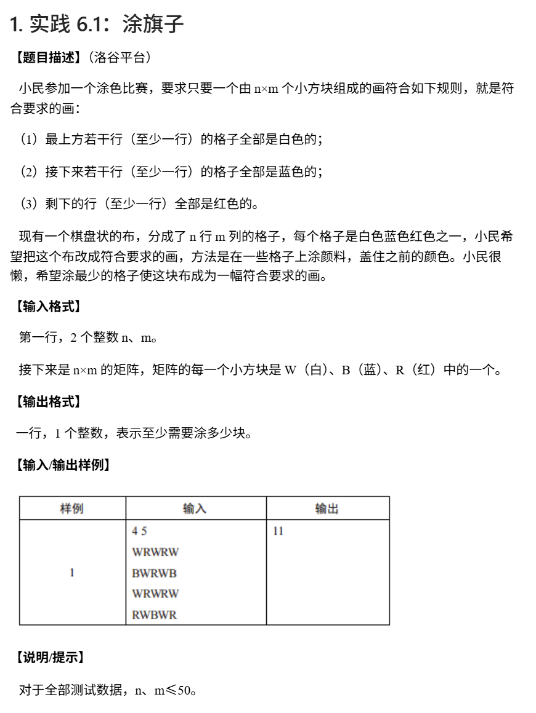
// 实践6.1：涂旗子
#include <stdio.h>
#include <string.h>
int main() {
int n, m;
scanf("%d%d", &n, &m);
char map[55][55];
for(int i = 0; i < n; i++) {
scanf("%s", map[i]);
}
// 预处理每行需要涂成W/B/R的数量
int w[55] = {0}, b[55] = {0}, r[55] = {0};
for(int i = 0; i < n; i++) {
for(int j = 0; j < m; j++) {
if(map[i][j] != 'W') w[i]++;
if(map[i][j] != 'B') b[i]++;
if(map[i][j] != 'R') r[i]++;
}
}
// 前缀和优化
int preW[55] = {0}, preB[55] = {0}, preR[55] = {0};
for(int i = 0; i < n; i++) {
preW[i+1] = preW[i] + w[i];
preB[i+1] = preB[i] + b[i];
preR[i+1] = preR[i] + r[i];
}
int ans = 1e9;
// 枚举W/B/R的分界点
for(int i = 0; i < n-2; i++) { // W到i行
for(int j = i+1; j < n-1; j++) { // B从i+1到j行
int cost = preW[i+1] + (preB[j+1] - preB[i+1]) + (preR[n] - preR[j+1]);
if(cost < ans) ans = cost;
}
}
printf("%d", ans);
return 0;
}解释：先预处理每行涂成W/B/R的代价，再枚举W、B、R的分界点，用前缀和快速计算总代价，取最小值。
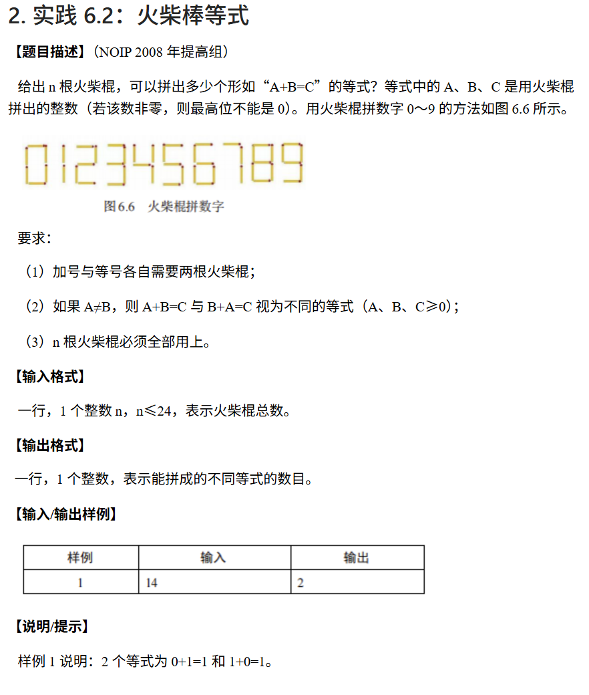
// 实践6.2：火柴棒等式
#include <stdio.h>
// 每个数字需要的火柴数
int cost[] = {6,2,5,5,4,5,6,3,7,6};
// 计算一个数需要的火柴数
int count(int x) {
if(x == 0) return cost[0];
int res = 0;
while(x > 0) {
res += cost[x%10];
x /= 10;
}
return res;
}
int main() {
int n;
scanf("%d", &n);
n -= 4; // 加号和等号共需要4根
int ans = 0;
// 枚举A和B，A+B=C，且A、B、C都不超过2*7（因为最多剩下20根火柴）
for(int a = 0; a <= 1111; a++) {
for(int b = 0; b <= 1111; b++) {
int c = a + b;
if(count(a) + count(b) + count(c) == n) {
ans++;
}
}
}
printf("%d", ans);
return 0;
}解释：先预处理每个数字需要的火柴数，再枚举A和B，计算C=A+B，检查三者火柴总数是否等于n-4（加号和等号用掉4根），统计符合条件的等式数目。
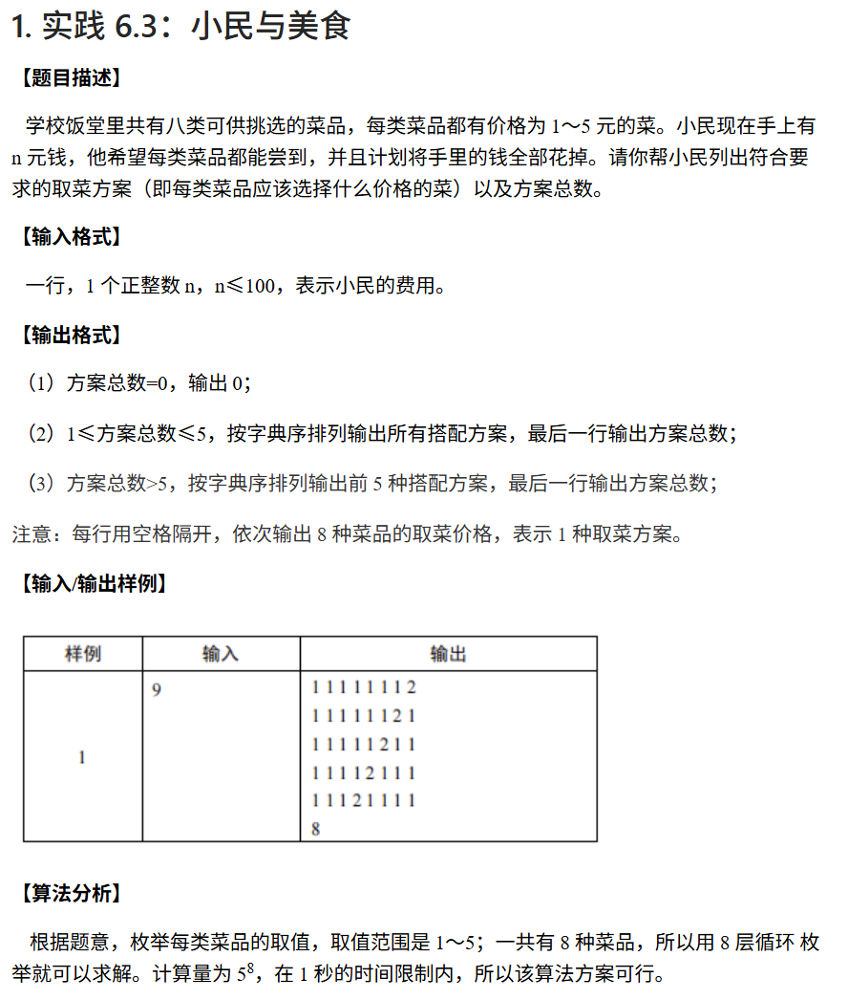
// 实践6.3：小民与美食
#include <stdio.h>
int cnt = 0;
int ans[10000][8];
int path[8];
void dfs(int idx, int sum, int n) {
if (idx == 8) {
if (sum == n) {
for (int i = 0; i < 8; i++)
ans[cnt][i] = path[i];
cnt++;
}
return;
}
for (int i = 1; i <= 5; i++) {
path[idx] = i;
dfs(idx + 1, sum + i, n);
}
}
int main() {
int n;
scanf("%d", &n);
dfs(0, 0, n);
if (cnt == 0) {
printf("0");
} else {
int show = cnt <= 5 ? cnt : 5;
for (int i = 0; i < show; i++) {
for (int j = 0; j < 8; j++)
printf("%d", ans[i][j]);
printf("\n");
}
printf("%d", cnt);
}
return 0;
}解释：使用递归枚举8道菜品的价格（1~5），统计总和等于n的方案，输出前5组方案与总方案数。
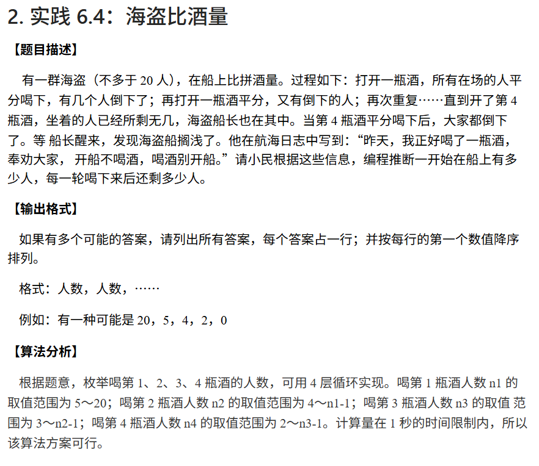
// 实践6.4：海盗比酒量
#include <stdio.h>
int main() {
int res[100][5]; // 存所有答案：初始人数、第1/2/3/4瓶人数
int cnt = 0;
// 枚举4瓶酒的人数
for(int n1 = 5; n1 <= 20; n1++) {
for(int n2 = 4; n2 < n1; n2++) {
for(int n3 = 3; n3 < n2; n3++) {
for(int n4 = 2; n4 < n3; n4++) {
// 船长喝的总量 = 1/n1 + 1/n2 + 1/n3 + 1/n4 = 1
if( (n2*n3*n4 + n1*n3*n4 + n1*n2*n4 + n1*n2*n3) == n1*n2*n3*n4 ) {
res[cnt][0] = n1;
res[cnt][1] = n2;
res[cnt][2] = n3;
res[cnt][3] = n4;
res[cnt][4] = 0; // 最后都倒下了
cnt++;
}
}
}
}
}
// 按初始人数降序输出
for(int i = cnt-1; i >= 0; i--) {
printf("%d, %d, %d, %d, %d\n",
res[i][0], res[i][1], res[i][2], res[i][3], res[i][4]);
}
return 0;
}解释：用4层循环枚举每一轮喝酒的人数，根据船长喝的总量为1瓶的条件（1/n1 + 1/n2 + 1/n3 + 1/n4 = 1）筛选出合法方案，最后按初始人数降序输出。
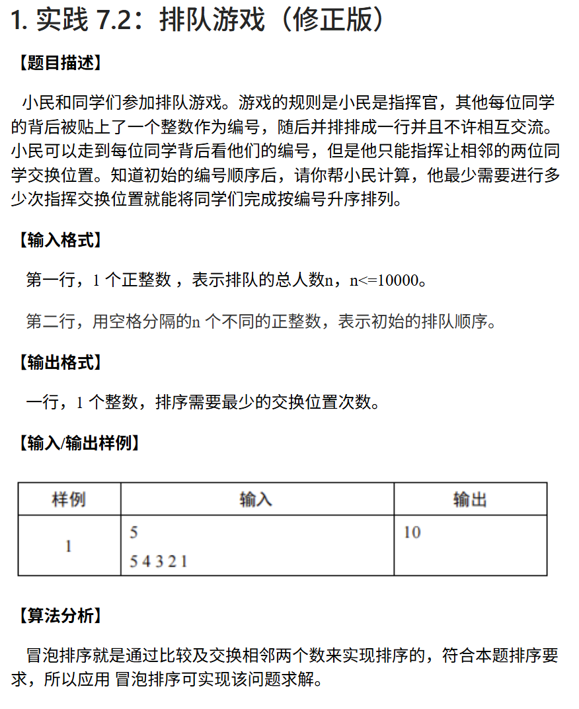
// 例题7.2：求冒泡排序交换次数（逆序对数量）
#include <stdio.h>
int main() {
int n, i, j, count = 0;
int a[10005];
scanf("%d", &n);
for (i = 0; i < n; i++) {
scanf("%d", &a[i]);
}
// 冒泡排序并统计交换次数
for (i = 0; i < n - 1; i++) {
for (j = 0; j < n - 1 - i; j++) {
if (a[j] > a[j + 1]) {
int t = a[j];
a[j] = a[j + 1];
a[j + 1] = t;
count++;
}
}
}
printf("%d", count);
return 0;
}解释：本题求冒泡排序的交换次数，等价于求数组的逆序对数量。每交换一次相邻逆序对，count+1，最后输出总数即可。
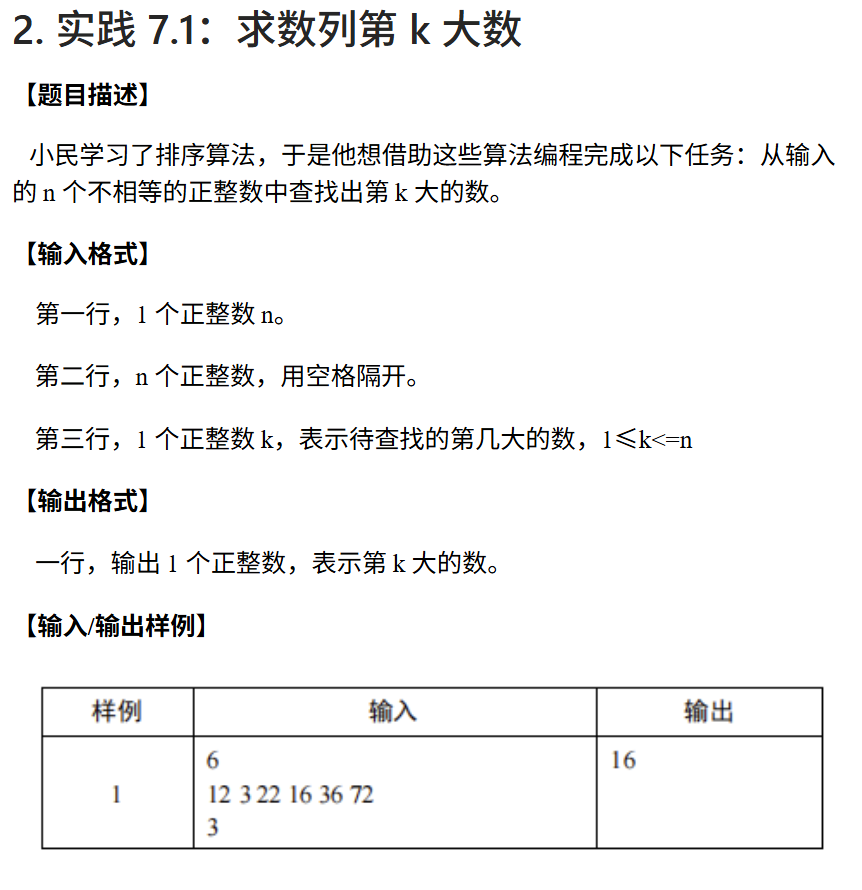
// 实践7.1：求数列第k大数
#include <stdio.h>
int main() {
int n, k, i, j, temp;
int a[10005];
scanf("%d", &n);
for(i = 0; i < n; i++) {
scanf("%d", &a[i]);
}
scanf("%d", &k);
// 降序冒泡排序
for(i = 0; i < n - 1; i++) {
for(j = 0; j < n - 1 - i; j++) {
if(a[j] < a[j + 1]) {
temp = a[j];
a[j] = a[j + 1];
a[j + 1] = temp;
}
}
}
printf("%d", a[k - 1]);
return 0;
}解释：先读取n个整数，用降序冒泡排序从大到小排列，排序完成后，数组第k-1个位置的元素就是第k大的数，直接输出即可。
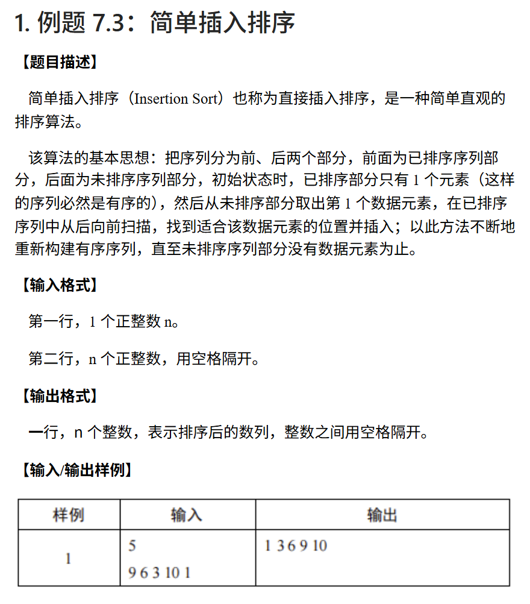
// 例题7.3：简单插入排序
#include <stdio.h>
int main() {
int n, i, j, key;
int a[10005];
scanf("%d", &n);
for(i = 0; i < n; i++) {
scanf("%d", &a[i]);
}
// 简单插入排序
for(i = 1; i < n; i++) {
key = a[i];
j = i - 1;
while(j >= 0 && a[j] > key) {
a[j + 1] = a[j];
j--;
}
a[j + 1] = key;
}
for(i = 0; i < n; i++) {
if(i > 0) printf(" ");
printf("%d", a[i]);
}
return 0;
}解释：采用简单插入排序，将数组分为已排序和未排序两部分，每次从未排序部分取出一个元素，在已排序部分中从后向前找到合适位置插入，最终得到升序序列。
// 例题7.1：简单选择排序
#include <stdio.h>
int main() {
int n, i, j, minIndex, temp;
int a[10005];
scanf("%d", &n);
for(i = 0; i < n; i++) {
scanf("%d", &a[i]);
}
// 简单选择排序（升序）
for(i = 0; i < n - 1; i++) {
minIndex = i;
for(j = i + 1; j < n; j++) {
if(a[j] < a[minIndex]) {
minIndex = j;
}
}
if(minIndex != i) {
temp = a[i];
a[i] = a[minIndex];
a[minIndex] = temp;
}
}
for(i = 0; i < n; i++) {
if(i > 0) printf(" ");
printf("%d", a[i]);
}
return 0;
}解释：采用简单选择排序，每次在未排序部分中找到最小元素，将其与未排序部分的第一个元素交换，逐步构建已排序序列，最终得到升序排列的数列。
// 例题7.2：冒泡排序
#include <stdio.h>
int main() {
int n, i, j, temp;
int a[10005];
scanf("%d", &n);
for(i = 0; i < n; i++) {
scanf("%d", &a[i]);
}
// 冒泡排序（升序，带优化）
for(i = 0; i < n - 1; i++) {
int swapped = 0;
for(j = 0; j < n - 1 - i; j++) {
if(a[j] > a[j + 1]) {
temp = a[j];
a[j] = a[j + 1];
a[j + 1] = temp;
swapped = 1;
}
}
if(!swapped) break;
}
for(i = 0; i < n; i++) {
if(i > 0) printf(" ");
printf("%d", a[i]);
}
return 0;
}解释：采用带优化的冒泡排序，通过多趟遍历未排序部分，比较并交换相邻元素，将较大元素逐步“冒泡”到末尾；若某趟遍历无交换发生，说明序列已有序，可提前结束排序。
// 实践7.3：抽查作业（计数排序去重+升序）
#include <stdio.h>
int main() {
int n, x;
int count[1001] = {0};
scanf("%d", &n);
for(int i = 0; i < n; i++) {
scanf("%d", &x);
count[x]++;
}
int m = 0;
for(int i = 1; i <= 1000; i++)
if(count[i] > 0) m++;
printf("%d\n", m);
for(int i = 1; i <= 1000; i++)
if(count[i] > 0) printf("%d ", i);
return 0;
}解释：利用计数排序思想，开1001大小数组统计学号出现次数；遍历1~1000，只输出出现过的学号，天然完成去重+升序排序。
// 例题7.4：快速排序
#include <stdio.h>
// 快速排序
void quickSort(int a[], int l, int r) {
if(l >= r) return;
int pivot = a[l];
int i = l, j = r;
while(i < j) {
while(i < j && a[j] >= pivot) j--;
a[i] = a[j];
while(i < j && a[i] <= pivot) i++;
a[j] = a[i];
}
a[i] = pivot;
quickSort(a, l, i-1);
quickSort(a, i+1, r);
}
int main() {
int n, a[10005];
scanf("%d", &n);
for(int i = 0; i < n; i++) {
scanf("%d", &a[i]);
}
quickSort(a, 0, n-1);
for(int i = 0; i < n; i++) {
if(i > 0) printf(" ");
printf("%d", a[i]);
}
return 0;
}解释：采用分治思想，选第一个数为基准pivot，将数组分为小于基准、大于基准两部分；递归对左右区间排序，最终得到升序序列。
// 例题7.5：二路归并排序
#include <stdio.h>
int temp[10005];
// 合并左右两个有序区间
void merge(int a[], int l, int mid, int r) {
int i = l, j = mid + 1, k = 0;
while(i <= mid && j <= r) {
if(a[i] <= a[j]) temp[k++] = a[i++];
else temp[k++] = a[j++];
}
while(i <= mid) temp[k++] = a[i++];
while(j <= r) temp[k++] = a[j++];
for(i = l, k = 0; i <= r; i++, k++)
a[i] = temp[k];
}
// 归并排序递归拆分
void mergeSort(int a[], int l, int r) {
if(l >= r) return;
int mid = (l + r) / 2;
mergeSort(a, l, mid);
mergeSort(a, mid+1, r);
merge(a, l, mid, r);
}
int main() {
int n, a[10005];
scanf("%d", &n);
for(int i = 0; i < n; i++) {
scanf("%d", &a[i]);
}
mergeSort(a, 0, n-1);
for(int i = 0; i < n; i++) {
if(i > 0) printf(" ");
printf("%d", a[i]);
}
return 0;
}解释：采用分治思想，将数组不断拆分为左右两半，递归排序；再把两个有序区间合并成一个有序区间，最终完成整体升序排序。
// 例题8.1：两数交换函数
#include <stdio.h>
// 指针作为参数实现两数交换
void swap(int *a, int *b) {
int t = *a;
*a = *b;
*b = t;
}
int main() {
int n, m;
scanf("%d%d", &n, &m);
swap(&n, &m);
printf("%d %d", n, m);
return 0;
}解释：定义swap函数，用int*指针接收变量地址；通过解引用*直接修改原变量的值，实现两数交换，主函数传入变量地址调用该函数。
// 例题8.3：字符串拷贝函数
#include <stdio.h>
// 自定义字符串拷贝函数，指针实现
void MyStrcpy(char *a, char *b) {
while(*b != '\0') {
*a = *b;
a++;
b++;
}
*a = '\0'; // 补上结束符
}
int main() {
char a[85], b[85];
gets(b);
MyStrcpy(a, b);
puts(a);
return 0;
}解释：自定义MyStrcpy函数，通过字符指针逐个将源字符串b的字符复制到目标字符串a，循环结束后手动添加字符串结束符'\0'，实现与库函数strcpy相同的拷贝功能。
// 实践8.1：求数组最大值和最小值
#include <stdio.h>
// 指针带回最大值、最小值
void getMaxMin(int a[], int n, int *max, int *min) {
*max = *min = a[0];
for(int i = 1; i < n; i++) {
if(a[i] > *max) *max = a[i];
if(a[i] < *min) *min = a[i];
}
}
int main() {
int n, a[25], max, min;
scanf("%d", &n);
for(int i = 0; i < n; i++) {
scanf("%d", &a[i]);
}
getMaxMin(a, n, &max, &min);
printf("%d %d", max, min);
return 0;
}解释：自定义函数用指针参数接收最大值、最小值的地址，遍历数组比较更新最值；主函数传入变量地址，调用函数后直接输出结果。
// 实践8.2：字符串逆置
#include <stdio.h>
#include <string.h>
// 指针实现字符串逆置
void MakeReverse(char *s) {
char *left = s;
char *right = s + strlen(s) - 1;
char t;
while(left < right) {
t = *left;
*left = *right;
*right = t;
left++;
right--;
}
}
int main() {
char str[55];
gets(str);
MakeReverse(str);
puts(str);
return 0;
}解释：自定义MakeReverse函数，用左右指针分别指向字符串首尾；交换指针指向字符，左指针右移、右指针左移，直到两指针相遇，完成字符串逆置。
// 实践8.5：指针数组的应用
#include <stdio.h>
#include <string.h>
#include <stdlib.h>
int main() {
int n;
scanf("%d", &n);
getchar();
// 动态申请指针数组
char **name = (char**)malloc(n * sizeof(char*));
for(int i = 0; i < n; i++) {
name[i] = (char*)malloc(21 * sizeof(char));
scanf("%s", name[i]);
}
// 冒泡排序升序
for(int i = 0; i < n-1; i++) {
for(int j = 0; j < n-1-i; j++) {
if(strcmp(name[j], name[j+1]) > 0) {
char *t = name[j];
name[j] = name[j+1];
name[j+1] = t;
}
}
}
// 输出
for(int i = 0; i < n; i++) {
printf("%s\n", name[i]);
free(name[i]);
}
free(name);
return 0;
}解释：用malloc动态申请指针数组，每个元素再动态申请姓名空间；通过strcmp比较字符串，冒泡排序实现姓名升序，最后释放动态内存。
// 实践8.3：回文字符串
#include <stdio.h>
#include <string.h>
// 指针判断回文
int isPalindrome(char *s) {
char *left = s;
char *right = s + strlen(s) - 1;
while(left < right) {
// 不区分大小写
if(*left >= 'A' && *left <= 'Z') *left += 32;
if(*right >= 'A' && *right <= 'Z') *right += 32;
if(*left != *right) return 0;
left++;
right--;
}
return 1;
}
int main() {
char str[55];
gets(str);
if(isPalindrome(str)) printf("Yes");
else printf("No");
return 0;
}解释：用左右字符指针分别指向字符串首尾，将大写字母转为小写后逐位比较；全部匹配为回文输出Yes，否则输出No。
// 实践8.4：结构体数组的应用
#include <stdio.h>
struct Player {
char name[21];
int num;
};
int main() {
int n;
scanf("%d", &n);
struct Player p[20];
struct Player *ptr = p;
// 输入
for(int i = 0; i < n; i++) {
scanf("%s %d", (ptr+i)->name, &(ptr+i)->num);
}
// 逆序输出，用指针操作
for(int i = n-1; i >= 0; i--) {
printf("%s %d\n", (ptr+i)->name, (ptr+i)->num);
}
return 0;
}解释：定义球员结构体存储姓名和号码，用结构体指针操作结构体数组；先顺序输入所有球员信息，再从数组末尾逆序遍历，输出球员信息。
// 实践8.6：通用函数的应用
#include <stdio.h>
struct Player {
char name[21];
int num;
};
// 输入函数
void input(struct Player *p, int n) {
for(int i = 0; i < n; i++) {
scanf("%s %d", (p+i)->name, &(p+i)->num);
}
}
// 通用排序函数：c=1升序，c=2降序
void sort(struct Player *p, int n, int c) {
for(int i = 0; i < n-1; i++) {
for(int j = 0; j < n-1-i; j++) {
int flag = 0;
if(c == 1) flag = (p[j].num > p[j+1].num); // 升序
else flag = (p[j].num < p[j+1].num); // 降序
if(flag) {
struct Player t = p[j];
p[j] = p[j+1];
p[j+1] = t;
}
}
}
}
// 输出函数
void output(struct Player *p, int n) {
for(int i = 0; i < n; i++) {
printf("%s %d\n", (p+i)->name, (p+i)->num);
}
}
int main() {
int n, c;
struct Player p[20];
scanf("%d", &n);
input(p, n);
scanf("%d", &c);
sort(p, n, c);
output(p, n);
return 0;
}解释：按要求拆分输入、通用排序、输出三个函数，用结构体指针传参；排序函数通过参数c控制升降序逻辑，实现一套代码两种排序效果，最后按格式输出球员信息。
感谢刘老师与25人工智能6班全体同学共同整理汇总，仅供复习使用 📚